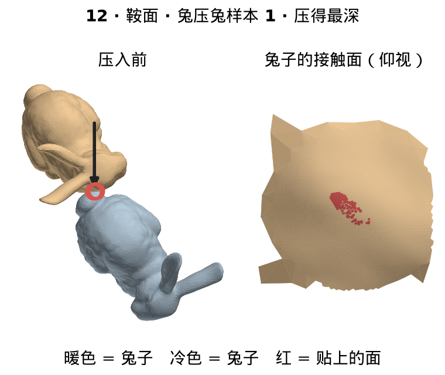
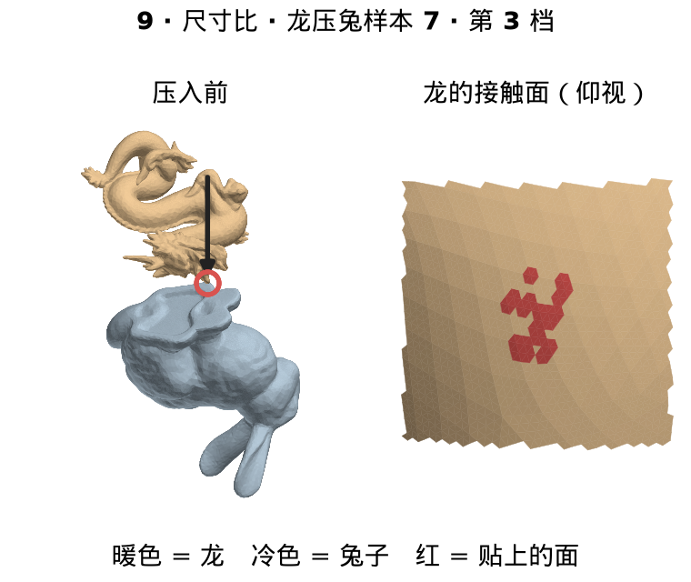

第 5–6 周：skeleton 在 edge case 上是否成立
- 颜色：正文是黑色；出处（正文里的 [n] 编号、折叠块「出处」里的条目）是青绿色；公式成立的条件是橙色。
本页只放两侧都是软体普通网格（兔、龙、鸭）的算例：7 类 27 个，其中 18 个基本对、8 个待定、1 个没有有效标准答案，判为明显不对的 0 个（这一档能否判出故意做错的算例还没有验证）。尖、尺寸比、凹面鞍面、一侧薄、两侧材料差 5 类至少有一个基本对；普通单片暂时都是待定，两侧都薄的唯一一格没有有效标准答案。都是浅压（最深约物体高度的 1%）；大压深（压入约物体高度的 1/3–1/2）和大应变尚未验证。在这些算例上，skeleton 比 hydroelastic 更接近现有的 IPC 标签。
主公式：从几何和材料推到 skeleton 能量
要算什么
-
粗模型每个物体只有 12 个 affine DoF：能表示整体移动和变形，表示不了接触处被压凹的那一小块；我们补给粗模型的就是这部分能量。
\[\color{#c0392b}{U(z)=\min_{w}\ \Pi(\Phi z+\Psi w)-\Pi(\Phi z)}\]
-
\(z\)：两个物体各自的 12 个 affine DoF（共 24 个），即粗模型的状态；\(\Phi z\) 是它们决定的整体变形。
- \(w\)：锁住这 12 个数以后剩下的全部变形（接触处的局部压凹、整体的弯和扭）；\(\Psi w\) 是它在精细 mesh 上的位移。
- \(\Pi\)：精细模型的弹性能（stable neo-Hookean）；\(\min_w\)：固定 \(z\)、让剩下的变形调到能量最小，即静止状态。
Pipeline
- 两条独立的线：GT（IPC + FEM 精细网格求解）一条；预处理 → 骨架一条；骨架这一次运行从 GT 结果里读两物体的粗状态和网格（为的是在同一个状态上比较 \(U_{\rm skel}/U_{\rm GT}\)），图里这几根箭头标 C2、C3；GT 不读骨架线的任何结果。图里圆角框是数据、直角框是模型或算法，箭头表示一个框的输出是另一个框的输入。
每根箭头的证明（读写代码行、运行记录、哈希）见 第 12 节。
每格的量：格距、重叠、压力
-
接触区自动找：在两物体互相穿进去的最深点，取对方表面的外法向 \(n\) 当压入方向，在垂直于 \(n\) 的平面上铺边长 \(h\) 的小格。
\[\color{#c0392b}{h=\tfrac14\sqrt{\hat d/\kappa_{\max}},\qquad w_i=w_{A,i}+w_{B,i}+o}\]
-
\(\kappa_{\max}\)：重叠区两表面相对弯曲程度（曲率）的最大值；\(\hat d\)：IPC 的安全距离，两面距离小于它才有斥力。弯得越厉害 → \(h\) 越小，因为弯曲处压力变化快。
- \(w_i\)：第 \(i\) 格两表面沿 \(n\) 互相穿进的深度之和；\(o\)：IPC 停住时两面间的缝，在 0 到安全距离之间，取上界 \(o=\hat d\)。
- 龙压鸭的算例：\(h=0.0020\)，最大重叠约 0.0031，3614 个候选格。
主公式
已知：每格重叠 \(w\)、柔度矩阵 \(C\)（下一小节展开）、格距 \(h\)；求：接触能量 \(U\)。
\[\begin{cases}\color{#c0392b}{u=C\,p} & \color{#c0392b}{(1)}\\[4pt] \color{#c0392b}{u_i\ge w_i,\quad p_i\ge 0,\quad p_i\,(u_i-w_i)=0} & \color{#c0392b}{(2)}\\[4pt] \color{#c0392b}{U=\tfrac12 h^2\,p^\top u} & \color{#c0392b}{(3)}\end{cases}\]
\[\color{#c0392b}{\Longrightarrow\ U=\max_{p\ge 0}\ h^2\Big[p^\top w-\tfrac12\,p^\top C\,p\Big]=\tfrac12 h^2\,p^{*\top}w}\]
式 (1)：线弹性。\(p\) 是所有格子的压强排成的向量，\(u\) 是每格表面沿 \(n\) 退回去的距离（两物体相加），\(C_{ij}\) 是「第 \(j\) 格加单位压强、第 \(i\) 格退多少」。小变形下材料是胡克的，所以位移和压强成正比、可以叠加。
式 (2)：接触条件。\(u_i\ge w_i\)：表面退回的量至少抵消重叠，接触后两物体不再互相穿透；\(p_i\ge0\)：接触只能推不能拉；\(p_i(u_i-w_i)=0\)：有压力的格子刚好贴上，没贴上的格子没有压力。
式 (3)：弹性能。每格的力是 \(h^2p_i\)（压强 × 格面积），力乘位移再除以 2 就是存下的弹性能，和弹簧的 \(\tfrac12Fx\) 一样。
结果：「压强推开重叠做的功」减「物体存下的弹性能」取最大，最大处的压力正好满足式 (1)(2)，最大值就是式 (3) 的弹性能；\(C\) 正定时解唯一。重叠越深 → 能量越大；柔度越大（物体越软）→ 能量越小。
推导：从接触条件到 max 形式
定义余能函数（\(p\ge0\) 上）：
\[\Pi^*(p)=\tfrac12h^2\,p^\top Cp-h^2\,p^\top w\]
在 \(p\ge0\) 约束下求 \(\Pi^*\) 的最小值，引入乘子 \(\lambda_i\ge0\)，最优性条件为
\[h^2(Cp-w)_i-\lambda_i=0,\qquad \lambda_i\ge0,\qquad \lambda_i\,p_i=0\]
由第一式 \(\lambda_i=h^2\big((Cp)_i-w_i\big)\)，代入 \(\lambda_i\ge0\) 和 \(\lambda_ip_i=0\)，再用式 (1) \(u=Cp\)：
\[u_i-w_i\ge0,\qquad p_i\,(u_i-w_i)=0,\qquad p_i\ge0\]
这正是式 (2)。所以满足式 (1)(2) 的 \(p^*\) 就是 \(\Pi^*\) 的最小点，也就是 \(-\Pi^*=h^2\big[p^\top w-\tfrac12p^\top Cp\big]\) 的最大点。
把 \(p_i^*(u_i-w_i)=0\) 对 \(i\) 求和：
\[p^{*\top}u=p^{*\top}w\quad\Longrightarrow\quad p^{*\top}Cp^*=p^{*\top}w\]
代回最大值：
\[h^2\Big[p^{*\top}w-\tfrac12p^{*\top}Cp^*\Big]=h^2p^{*\top}w-\tfrac12h^2p^{*\top}w=\tfrac12h^2p^{*\top}w\]
再用 \(p^{*\top}w=p^{*\top}u\)，得 \(\tfrac12h^2p^{*\top}u\)，即式 (3) 的 \(U\)。
\(C\) 正定时 \(\Pi^*\) 严格凸，最小点唯一。
柔度 C 拼起来
已知：两物体的表面、材料 \(E_b\)、\(\nu_b\)（\(b=A,B\)）、每个物体预先算好的 \(k\) 个 mode；求：\(C\) 的每一个元素。
\[\begin{cases}\color{#c0392b}{u(r)=\dfrac{F}{\pi E' r},\qquad E'=\dfrac{E}{1-\nu^2}} & \color{#c0392b}{(4)}\\[8pt] \color{#c0392b}{u=u_A+u_B} & \color{#c0392b}{(5)}\\[4pt] \color{#c0392b}{G_{R}(x,y)\approx\textstyle\sum_{m=1}^{k}\sigma_m\,r_m(x)\,r_m(y)} & \color{#c0392b}{(6)}\end{cases}\]
\[\color{#c0392b}{\Longrightarrow\ C_{ij}=\sum_{b\in\{A,B\}} c_{b,i}\,c_{b,j}\Big[\frac{L_{ij}}{E'_b}+h^2\sum_{m=1}^{k}\sigma_{b,m}\,r_{b,m}(x_{b,i})\,r_{b,m}(x_{b,j})\Big],\qquad L_{ij}=\frac1\pi\iint_{\text{格}\,j}\frac{dA_y}{|x_i-y|}}\]
式 (4)：Boussinesq 点力解。无限大弹性体表面一点受力 \(F\)，距离 \(r\) 处下沉 \(u(r)\)，按 \(1/r\) 衰减；\(E\) 是杨氏模量（材料多硬），\(\nu\) 是泊松比（压扁时往旁边鼓多少），\(E'\) 是平面应变模量。
式 (5)：串联。两侧表面各自退回，加起来才是抵消重叠的总量，和两根弹簧串联时伸长相加一样。
式 (6)：剩余柔度。有限物体同一点受压比无限大弹性体下沉得多（或少），差值 \(G_R(x,y)\) 用 \(k\) 个表面振型（mode）展开：\(r_m\) 是第 \(m\) 个 mode 在表面上的值，\(\sigma_m\) 是它的柔度，可正可负（第 6 节讲怎么求）。
结果：每个物体贡献两项。「半空间项」\(L_{ij}/E'_b\)：把式 (4) 在第 \(j\) 格上积分、在第 \(i\) 格心读出的下沉；「mode 项」：有限物体多出（或少出）的柔度，主要是整体的弯和扭。\(c_{b,i}\) 是物体 \(b\) 在第 \(i\) 格处表面法向与 \(n\) 夹角的余弦，平处约为 1；\(x_{b,i}\) 是第 \(i\) 格沿 \(n\) 打到物体 \(b\) 表面的点。
推导：从点力解到 C 的元素
第 \(j\) 格上均布单位压强，小面积 \(dA_y\) 上的力是 \(dF=1\cdot dA_y\)；代入式 (4) \(u=\dfrac{F}{\pi E'r}\)，对第 \(j\) 格积分，得物体 \(b\) 在第 \(i\) 格心沿表面法向的下沉：
\[u_{b,i}=\frac{1}{\pi E'_b}\iint_{\text{格}\,j}\frac{dA_y}{|x_i-y|}=\frac{L_{ij}}{E'_b}\]
压强沿压入方向 \(n\)，表面法向和 \(n\) 夹角余弦为 \(c_{b,j}\)，所以沿表面法向的压强是 \(c_{b,j}\) 倍；下沉沿表面法向，投回 \(n\) 方向再乘 \(c_{b,i}\)：
\[u_{b,i}^{\text{半空间}}=c_{b,i}\,c_{b,j}\,\frac{L_{ij}}{E'_b}\]
剩余柔度：第 \(j\) 格的力是 \(h^2\cdot1\)，代入式 (6)，同样带上两个余弦：
\[u_{b,i}^{\text{mode}}=c_{b,i}\,c_{b,j}\,h^2\sum_{m=1}^{k}\sigma_{b,m}\,r_{b,m}(x_{b,i})\,r_{b,m}(x_{b,j})\]
两部分相加得物体 \(b\) 的贡献；由式 (5) \(u=u_A+u_B\) 对 \(b=A,B\) 求和，就是 \(C_{ij}\)。
- 龙压鸭（该标签保持帧较少）：加 80 个 mode 后 \(U=0.00518\)，标准答案 0.00605，比值 0.857；其中 55% 来自 mode 项。只用半空间项时 \(U\) 是加 mode 后的 2.5 倍、合力是 2.8 倍。
skeleton 只用几何和材料：重叠 \(w\) 由两物体的表面现量，柔度 \(C\) = 半空间解析项 + 每个物体预先算好的 mode 项，解一个凸二次规划就得到接触能量。
刚度 E 和泊松比 ν 怎么进公式
进入半空间项
\[\color{#c0392b}{\frac{1}{E'_b}=\frac{1-\nu_b^2}{E_b}}\]
- E 越大 → 柔度 \(1/E'\) 越小 → 同样的重叠要更大的压力 → 能量越大。
- ν 越大 → \(1-\nu^2\) 越小 → 表面越硬 → 能量越大。 \(\nu=0.3\) 时 \(E'=1.099E\)，\(\nu=0.49\) 时 \(E'=1.316E\)，硬 19.8%。
-
两侧法向余弦相同（平处都约为 1）且只有半空间项时，两侧合成一个等效模量，由更软的一侧主导；重叠不变时能量与它成正比，有压力的格子不变：
\[\color{#c0392b}{\frac{1}{E^*}=\frac{1}{E'_A}+\frac{1}{E'_B}\quad\Longrightarrow\quad U\propto E^*}\]
推导：U 与 E* 成正比
前提下半空间项为 \(C=C_0/E^*\)，\(C_0\) 与材料无关。令 \(p=E^*q\)：
\[\begin{aligned}\max_{p\ge0}h^2\Big[p^\top w-\tfrac{1}{2E^*}p^\top C_0p\Big]&=\max_{q\ge0}h^2\Big[E^*q^\top w-\tfrac{1}{2E^*}(E^*)^2q^\top C_0q\Big]\\ &=E^*\max_{q\ge0}h^2\Big[q^\top w-\tfrac12q^\top C_0q\Big]\end{aligned}\]
右边的最大化与 \(E^*\) 无关，所以 \(U\propto E^*\)；最优 \(q\) 不变，\(p=E^*q\) 的非零位置也不变。
进入 mode 项
-
mode 来自「锁住 affine 后的真实表面柔度 − 半空间柔度」，ν 固定时两者都与 \(1/E\) 成正比：
\[\color{#c0392b}{\sigma_m\propto\frac1E,\qquad r_m\ \text{不随}\ E\ \text{变}}\]
-
实测：同一个兔耳网格，\(E\) 从 \(10^5\) 换成 \(10^6\)，前三个 mode 的柔度 0.01394、0.01380、0.00404 变成 0.001394、0.001380、0.000404，正好 1/10。
- E 越大 → \(\sigma\) 越小 → 有限物体多出来的柔软越少 → 能量越接近只用半空间项的值。
- ν 改变锁住 affine 后柔度场的形状（接近不可压时体积几乎不能变），换 ν 要重算 mode。
软硬对调
\[\color{#c0392b}{C=\sum_{b\in\{A,B\}}\Big[\frac{1}{E'_b}\,D_bLD_b+\frac{1}{E_b}\,\tilde\Phi_b\Sigma^{(1)}_b\tilde\Phi_b^\top\Big]}\]
- \(D_b\)：物体 \(b\) 每格法向余弦排成的对角阵；\(L\)：半空间积分 \(L_{ij}\) 排成的矩阵；\(\tilde\Phi_b\Sigma^{(1)}_b\tilde\Phi_b^\top\)：物体 \(b\) 在 \(E=1\) 时的 mode 项。
- 每一项只属于一个物体：每个物体带自己的形状和材料进场、两侧相加，软硬对调直接套同一个公式。
- 半空间项：\(D_A=D_B\) 时只认 \(1/E'_A+1/E'_B\)，对调后不变；一侧是曲面时会变一点。
- mode 项各乘各的 \(1/E\)：对调后硬的一侧 mode 缩小、软的一侧放大；两物体形状不同，能量就不对称。
其他两侧材料不同的算例
| 两侧材料不同的算例 | skeleton ÷ IPC | 修正后区间 | 判定 |
|---|---|---|---|
| 龙压龙，下侧硬 10 倍 | 0.926 | [0.997, 1.065] | 基本对 |
E 和 ν 只通过每个物体自己的 \(1/E'\) 和自己的 mode 进入柔度，两侧串联相加；两侧余弦相同时半空间部分只认 \(E^*\)，软硬分配的差别落在各自的 mode 上。
线性、Hertz、非线性：公式管到哪
三种非线性
- 材料非线性：应力和应变不成正比（neo-Hookean 等超弹性模型，应变一大就弯离胡克直线）。
- 几何非线性：位移、转动大到小变形近似不成立。
-
接触非线性：材料胡克、变形也小，但接触区随压深变化，力和压深不成正比。文献里的 Hertz 解属于这一类（只作引用，出处与条件见 11.6）：
\[\color{#c0392b}{a^2=Rd\quad\Longrightarrow\quad F=\tfrac43E^*\sqrt R\,d^{3/2}}\]
-
\(a\)：接触圆半径；\(R\)：球半径；\(d\)：压深；\(F\)：合力。压得越深 → 接触面越大 → 越压越硬。
skeleton 管到哪
- 柔度来自小应变线弹性；有压力的格子由求解决定，在每个状态重新铺的候选格内随压深变化。龙压鸭：重叠格 3229 个，只用半空间项时 1650 个有压力，加 80 个 mode 后 822 个。
- 所以接触区随压深变大这种非线性能由求解自己给出，不需要事先假设接触区的形状。
- 管不到：材料非线性；几何非线性（半空间解的误差量级是表面斜率的平方）。
非线性弹性怎么接上
- 闭式接触解靠线弹性的叠加原理，材料非线性时叠加原理不成立，我们用 IPC 数值求解。
- 公式 + 小网络残差：公式算线弹性部分，IPC（跑 neo-Hookean）给真值，小网络只学两者之差。另一条路是增量线性化：大变形拆成小步，每步在当前状态上用线性公式。
- 大压深、大应变尚未做，这部分的差还没有量。
skeleton 覆盖线弹性下的接触非线性（Hertz 类），材料非线性和几何非线性留给 neural 残差。
标准答案（IPC）怎么得到
- 场景与状态：两物体的精细四面体网格，材料各给 \(E\)、\(\nu\)；每个物体的 12 个 affine DoF 定成目标值（例如上面的物体下移 0.003、0.006、0.012）。
- 锁 affine：每帧用逐顶点外力把质心和体积平均变形梯度 \(\bar F\) 拉回目标值，其余变形放开。
- IPC 求解：无摩擦接触、stable neo-Hookean，加载后保持，连续 2 帧几乎不动且保持帧数够才停。
-
读能量：
\[\color{#c0392b}{U=\sum_b E^{\text{fine}}_b-\sum_b V_b\Big[\Psi\big(\bar F_b\big)-\tfrac{\mu_b^2}{2\lambda_b}\Big]}\]
-
\(E^{\text{fine}}_b\)：物体 \(b\) 精细网格的弹性能；第二项是粗模型自己已有的能量：\(V_b\) 体积，\(\Psi\) 同一材料的能量密度，\(\mu_b\)、\(\lambda_b\) 是 stable neo-Hookean 的两个材料参数（\(\mu_b=\mu\)，\(\lambda_b=\lambda+\mu\)，\(\mu\)、\(\lambda\) 为 Lamé 常数；\(E=10^5\)、\(\nu=0.3\) 时 \(\lambda_b=96153.8\)），减去 \(\mu_b^2/(2\lambda_b)\) 让静止形状能量为 0。
- 龙压鸭：\(U=0.00605\)，龙存 0.00437、鸭存 0.00168，粗模型能量只有 \(3.4\times10^{-7}\)。
-
线性单元偏硬：薄处和接近不可压时尤其明显。同一网格、同一状态上用二次和线性单元各算一次线弹性能，标准答案乘上二者之比：
\[\color{#c0392b}{\text{修正后比值}=\frac{U_{\text{skel}}}{U_{\text{IPC}}\times U^{\text{二次}}_{\text{线弹}}/U^{\text{线性}}_{\text{线弹}}}}\]
-
例：龙压龙、下侧硬 10 倍，二次 / 线性 = 0.899，原始比值 0.926 修正到约 1.031（参照格距还不够细，作参考值）。
标准答案锁住和粗模型相同的 12 个 affine DoF、跑到静止，只取弹性能之差；线性单元偏硬用二次单元的比值修正。
预处理
| 步骤 | 什么时候做 | 输入 → 输出 | 实测（龙，表面 27930 点） |
|---|---|---|---|
| 四面体网格 | 每个物体一次 | 表面 → 四面体 | 未单独计时 |
| 组装刚度 | 每个物体一次 | 网格 + \(E\)、\(\nu\) → 刚度、表面载荷 | 37 秒 |
| 半空间矩阵 | 每个物体一次 | 表面 → 每对表面点之间的半空间柔度 | 33 分钟 |
| 锁 affine 的真实柔度 | 每个物体一次 | 刚度 → 表面柔度作用 | 2.5 分钟 |
| 求 mode | 每个物体一次 | 两个柔度之差 → \(\sigma_m\)、\(r_m\) | 合计 37 分钟 |
| Krylov 续算 | 每个物体一次 | 上一步的中间结果 → 更准的 mode | 2 秒 |
| 找接触区、铺格、取 mode 值 | 运行时，每个状态 | 粗状态 → \(h\)、\(w\)、\(C\) | — |
| 解二次规划 | 运行时，每个状态 | \(C\)、\(w\) → \(p\)、\(U\) | 0.2–1.6 秒 |
- 大头是半空间矩阵：表面每两个点之间算一次积分，随点数平方增长。
- 要求是每个物体只做一次、只依赖它自己的几何和材料，对任何对手、角度、接触位置都成立；本页表里的数用的是每个场景一套的 mode，网格在已知接触点附近加密过，不满足这条（见 11.4「已知限制」）；逐物体、与接触位置无关的预处理已在龙压鸭上做通，骨架 ÷ IPC 0.8454（按场景 0.8568），见 第 7 周 §8.2。
预处理目前 37 分钟，大头是稠密的半空间矩阵，需要提速；本页的 mode 是每个场景一套；逐物体的通用预处理已在龙压鸭上做通（骨架读数变 −1.33%），龙的预处理 95.5 分钟、仍要提速。
mode 怎么求
mode 是什么
- 剩余柔度：真实下沉 = 无限大弹性体给的下沉 + 有限大小、边界、薄处带来的额外下沉；后者在光滑表面处是光滑的，能用少数几个表面振型表示（棱、角、尖端处这一点不成立）。
- 自由漂浮、只锁 12 个 affine DoF：整体移动和仿射变形归粗模型管，接触项不重复算。
方程
已知：物体的四面体网格、\(E\)、\(\nu\)；求：前 \(k\) 个 mode 的柔度 \(\sigma_m\) 和表面值 \(r_m\)。
\[\begin{cases}\color{#c0392b}{K_{\text{lock}}:\ \text{锁住 12 个 affine DoF 后，表面帽函数压强 → 表面位移的线弹性柔度}} & \color{#c0392b}{(7)}\\[6pt] \color{#c0392b}{H_{ij}=\displaystyle\iint\frac{\phi_i(x)\,\phi_j(y)}{\pi E'\,|x-y|}\,dA_x\,dA_y} & \color{#c0392b}{(8)}\\[10pt] \color{#c0392b}{W=\mathrm{diag}\Big(\textstyle\int\phi_i\,dA\Big)} & \color{#c0392b}{(9)}\end{cases}\]
\[\color{#c0392b}{\Longrightarrow\ W^{-1/2}\big(K_{\text{lock}}-H\big)W^{-1/2}\,v_m=\sigma_m v_m,\qquad r_m=W^{-1/2}v_m}\]
式 (7)：真实柔度。表面每个顶点放一个帽函数 \(\phi_i\)（该顶点处为 1、向相邻顶点线性降到 0）；\(K_{\text{lock}}\) 的 \((i,j)\) 元是「\(j\) 处帽函数压强在 \(i\) 处产生的位移」按帽函数加权的积分，位移由锁住 affine 的线弹性问题解出。
式 (8)：同一组帽函数下的半空间柔度，把式 (4) 在两个帽函数上积分；积分方式和 \(K_{\text{lock}}\) 相同，两者才能直接相减。
式 (9)：每个表面点管的面积（帽函数的积分），用它把大小不同的三角形拉平，相减后是对称的特征值问题。
结果：取绝对值最大的 \(k\) 个特征值 \(\sigma_m\) 和特征向量，\(G_R\approx\sum_m\sigma_mr_mr_m^\top\)。\(\sigma_m>0\)：这个振型上真实物体比无限大弹性体软；\(\sigma_m<0\)：更硬。龙的 80 个 mode 里 5 个为负，鸭的 80 个里 29 个为负。
怎么解
- 每乘一次 \(K_{\text{lock}}\) 都要解一次大的线弹性方程，所以只能「乘几次」。
- 随机化求特征值：\(k+20\) 个随机向量乘一次，再反复乘 4 次让大的特征方向浮出来，在子空间里解小特征值问题。
- 块 Krylov 续算：把每次乘出来的结果拼成一个大子空间（龙 479 维）再解一次，不多乘就得到更准的 mode。
- 合格判据：每个 mode 的 Ritz 残差（离真特征向量的相对距离）不超过 1%；所用前 \(k\) 个都满足，\(k\) 才合格。
- 龙压鸭：续算后两个物体的 80 个 mode 全部合格，最大残差 \(2.5\times10^{-4}\)；原来只乘 2 次时，鸭从第 20 个 mode 起就不合格，只能用 19 个。
同一组 mode 里多用几阶，比值为什么会降
已知：两个柔度矩阵 \(C_1\)、\(C_2\)，\(C_2-C_1\) 半正定；求：两者能量的大小关系。
\[\color{#c0392b}{C_1\preceq C_2\ \Longrightarrow\ U(C_2)\le U(C_1)}\]
结果：对任意 \(p\)，\(p^\top w-\tfrac12p^\top C_2p\le p^\top w-\tfrac12p^\top C_1p\)，取最大也保持。同一组 mode 里多加一个 \(\sigma_m>0\) 的阶，就是给 \(C\) 加一个半正定项 → skeleton 变软 → 能量不增；多加一个 \(\sigma_m<0\) 的阶 → 能量不减。
| 用的 mode 数 | skeleton ÷ IPC |
|---|---|
| 0 | 2.157 |
| 5 | 0.935 |
| 19 | 0.868 |
| 40 | 0.863 |
| 79 | 0.85678 |
| 80 | 0.85684 |
设置：龙压鸭，压深 0.003，80 个 mode 全部合格。
- 总体随 mode 数下降；79 → 80 升一点，因为龙和鸭的第 80 个 mode 柔度都是负的。
- 越往后降得越慢：mode 按 \(|\sigma|\) 从大到小排，龙第 1 个是 0.0152，第 80 个约 \(2.6\times10^{-5}\)。
- 换一组 mode（比如换成更准的 80 个）时 mode 本身变了，这个关系不适用，比值可升可降。
- 被截掉的 mode 柔度全为正时，截断让 skeleton 偏硬。
mode 是「锁住 affine 后的真实表面柔度 − 半空间柔度」的主要特征方向；同一组 mode 里加正柔度的阶只会让 skeleton 变软，合格 mode 要够多。
结果
怎么判对不对
- skeleton 能量 ÷ 标准答案，落在 0.9 到 1.1 之间算对。
- 标准答案自己有误差（线性单元偏硬、格距、mode 截断），每个算例给修正后的一个区间：整段在 0.9–1.1 里记基本对；跨过边界，或整段在带外但还没测完，记待定；测完、确定是公式本身算不准，才记明显不对。
- 本页只统计两侧都是软体普通网格（兔、龙、鸭）的算例。
- 18 个基本对里，5 个的原始比值低于 0.9（最低 0.77），靠修正项进入区间。
总表
| 结果 | 算例数 |
|---|---|
| 基本对 | 18 |
| 待定，原始比值已在 0.9–1.1 内 | 5 |
| 待定，原始比值在带外 | 3 |
| 明显不对 | 0 |
| 没有有效标准答案 | 1 |
判定档变化的算例
- 档的变化来自两次更新：第一次换成 80 个合格 mode，第二次修正判档区间的修正项（格距、保持帧数的实测值）。下面只列两侧都是软体的算例。
| 算例 | 原始比值（前 → 后） | 最终修正后区间 | 判定 |
|---|---|---|---|
| 凹面鞍面处接触（兔压龙） | 0.919 → 0.900 | [0.935, 1.095] | 待定 → 基本对 |
| 尖处压龙，压深 0.006 | 0.995 → 0.935 | [0.979, 1.096] | 待定 → 基本对 |
| 尖处压龙，压深 0.012 | 1.040 → 0.963 | [1.026, 1.096] | 待定 → 基本对 |
| 一般形状尖处互压（龙压龙） | 0.964 → 0.950 | [1.027, 1.098] | 待定 → 基本对 |
| 尺寸比，压深 0.012 | 0.998 → 0.961 | [1.036, 1.065] | 待定 → 基本对 |
| 龙压鸭，压深 0.003 | 0.868 → 0.857 | [0.898, 1.091] | 基本对 → 待定·误差大 |
| 龙压鸭，第二档压深 | 0.898 → 0.885 | [0.937, 1.125] | 待定·误差大 → 基本对 → 待定·误差大 |
| 尺寸比，第二档压深 | 0.923 → 0.882 | [0.915, 1.000] | 基本对 → 待定·误差大 → 基本对 |
每类一个例子
凹面鞍面：两只兔子互压，接触点在一只兔子马鞍形（一个方向凸、另一方向凹）的位置。

凹面鞍面 · 0.934 → [1.006, 1.110] · 待定·误差小
尖：兔子身上的尖处压到龙上，两个一般形状物体互压，接触在尖端。

尖 · 0.963 → [1.026, 1.096] · 基本对
尺寸比：龙压兔子，兔子比龙大，体积约 3.6 倍（长度约 1.53 倍）。

尺寸比 · 0.896 → [0.930, 1.017] · 基本对
普通单片：鸭子压兔子，一般形状、一处接触的普通情况。

普通单片 · 0.954 → [1.011, 1.116] · 待定·误差小
两侧都是软体普通网格的 27 个算例里 18 个基本对、8 个待定、0 个明显不对、1 个没有有效标准答案。
和 hydroelastic 比
- 这里的标准答案是我们自己的 IPC 标签；以独立的弹性解析解为裁判的比较排在后面。
- 两侧都是软体、两种方法都有结果的 19 行里，18 行是 skeleton 更接近我们的 IPC 标签：|skeleton ÷ 标准答案 − 1| 小于 |hydroelastic ÷ 标准答案 − 1|（都按未修正的原始比值比）。
- hydroelastic ÷ 标准答案在 0.10 到 2.79 倍之间；skeleton 在 0.86 到 0.97 之间（均为未修正值）。
还需不需要 neural
现在还定不了。两侧都是软体的 26 个有标准答案的算例：18 基本对、8 待定、0 明显不对（明显不对这一档的判出能力尚未验证）。待定的要等标准答案修正测准、mode 选取规则统一之后才知道 skeleton 还剩多少误差。如果剩下的误差在已测范围内（不含大压深、大应变）所有类别里都落在 0.9 到 1.1 之内，单靠 skeleton 就够了；如果某几类始终偏，neural 就用来补这几类。压入约物体高度 1/3–1/2、看得见压扁的大压深，和大应变，尚未做，不在上面的已测范围里。
为什么慢、卡在哪
标准答案本身很难算：要算到完全静止才准，一个算例要几分钟到一小时，粗模型整体变形大的时候干脆不收敛。标准答案偏硬，要修正它就得在同一个 mesh 上用二次单元再算一遍，每个算例还要再花几分钟到十几分钟，所以现在大部分算例还停在待定。另外，高阶 mode 本身也不好算准。
骨架公式的推导、成立条件和文献里已知的公式
- 这一节对应 week5 TODO 第 3 条「literature search 有多少公式是已知的」：先把整条 pipeline 和两边用的模型摆清楚，再一步一步推 skeleton 的两项、写清每一步要什么条件，最后列文献里已知的公式和它们的条件。
- 代码行号对应 sandbox 仓库当前的
main；文献行号对应 sandboxrefs/下的全文。写「未实测」「未核实」的地方是没有结果文件或没核到原文。
完整 pipeline：从原始输入到比较的两个数
- 本页算例的两条线（GT；预处理 → 骨架）逐步的输入、式子、输出，以及每根箭头属于同一条计算链的证据，都在 第 12 节；判定档的规则在 7.1 怎么判对不对。
- 本页的算例都是浅压。week7 的大压深标签换了做法：每个物体只锁质心和转角，带体积屏障的 neo-Hookean 材料，IPC 接触，约束在每一次隐式求解里严格满足；做法与结果见 第 7 周 §4。
- 压深按用户 11-20 的定义：「是重叠的不是靠近就行的就是要最近点碰上之后的压缩距离才是重叠的」「他们重叠的区域的最大高度要是1/2h」「压深定义就是重叠的吧就是碰上了」。即两个物体按不变形的形状摆在当前位置时，重叠区沿 \(y\) 方向的最大高度 = 压深比例 × \(H\)（\(H\) 是包围盒高度）；这和接触力学里 indentation depth 的定义一致（两体从刚接触起的刚体靠近量，等于未变形轮廓的最大重叠量）。
出处
- 压深定义：[ref: Popov, Heß & Willert 2019, Handbook of Contact Mechanics §2.2 式 2.1、2.4，refs/phw2019_handbook.txt:522–559]
- 大压深 GT 做法：第 7 周页 §4（「大压深怎么造」）。
GT 和骨架各是什么材料、什么接触：我们 vs 导师代码（按最新代码）
- 这张表只看两边的最新代码[1]。每一格的代码出处在表下的折叠块。
- 「线弹性」= 应力和应变成正比、小应变；「超弹性 neo-Hookean」= 应变一大就偏离正比，而且按大变形算。
| (1) 我们的 GT（IPC+FEM 标签） | (2) 导师的 GT | (3) 我们的骨架 | (4) 导师的模型 | |
|---|---|---|---|---|
| 本构 | week7 用 nh_barrier（neo-Hookean）：带 \(\log J\) 屏障的标准 neo-Hookean，\(\Psi=\tfrac\mu2(I_c-3)-\mu\ln J+\tfrac\lambda2(\ln J)^2\)，真 Lamé 参数[2]。week5 标签：libuipc snk1，\(\Psi=\tfrac12[\mu(I_c-3)+\lambda(J-1-\mu/\lambda)^2]\)，属性改写成 \((\mu,\lambda+\mu)\)[3] | libuipc 0.0.25 的 StableNeoHookean（Smith 2018 形式：\(\mu'=4\mu/3,\ \lambda'=\lambda+5\mu/6\)，含 \(-\tfrac{\mu'}2\ln(I_c+1)\) 项）：[4][5]；批量标签用自写 torch 求解器、同一能量：[6]。二维轴对称参照另有线弹性、neo-Hookean、Gent：[7] | 线弹性：半空间项 \(\sum_b c_bLc_b/E'_b\)[8]和 mode 项（P2 小应变刚度 \(K_e=\lambda GG+\mu(\dots)\)，[9]；模态由 [10] 算，[11]）都只来自线弹性 | Hertz 先验 \(\tfrac{8}{15}E^*\sqrt{R_\text{fit}}\,\delta^{5/2}\)（线弹性、半空间）乘 \(\exp(g)\)，\(g\) 是 MLP（3 层 64 宽 SiLU）：[12][13]；非线性全在 \(g\) 里 |
| 小 / 大应变 | 大变形：牛顿法解完整的超弹性能量（同上本构） | 大变形（同上）；轴对称的 linear 选项是小应变[14] | 小应变、几何线性；唯一的非线性是接触本身：\(p\ge0\) 的主动集求解[15]。week5/ 里没有任何神经网络（无 nn.Module） | 先验是小应变；大变形、材料非线性靠 \(g\) 拟合 |
| 接触模型 | IPC barrier[16]，\(\hat d=1.25\times10^{-4}\)[17]，κ = --contact_resistance 1149662148593404[18] | 3D libuipc：al-ipc，\(\hat d=10^{-3}\)，κ = 1e9[19]；批量 torch：罚函数 \(\tfrac12\kappa\sum_ia_i\,\mathrm{relu}(\text{offset}-d_i)^2\)[20]，κ = 1e9[21]；轴对称：罚函数 κ = 1e10[22] | 无势垒：互补条件 \(p\ge0\)、\(w-Cp\le0\)，余能二次规划 | 无接触求解：直接给能量 |
| 摩擦 | 无[23] | 无[24] | 无（只有法向压强 \(p\)） | 无（只有法向能量） |
| 加载 / 边界 | week5 浅压：12 个 affine 数全锁。week7 大压深：每个物体只锁质量加权质心 3 个数 + 转角 3 个数（\(\operatorname{skew}(A)\)），拉伸、剪切自由；约束用加边 KKT 在每一次隐式求解里严格满足，锁的乘子就是接触合力 P 和保持转角的力矩 | 3D libuipc：只加等大反向的均匀体力 \(a_k=\mp P/M_k\)，不锁任何自由度[25]；批量 torch：12 个 affine 数全锁（\(z_1,z_2\) held FIXED，[27]）；轴对称：rigid = 锁质心平移，或 affine[26] | 输入是粗模型的 12 个 affine 数（标签终态 \(\bar F\)、质心，[28]） | 输入是两个 affine 摆放（\(A_k\)）+ 压深 |
| 几何 | 真实网格：兔子、龙、鸭子[29] | 球：solid_ball[30]、graded_ball[31]；轴对称二维半圆盘[32] | 同 (1) 的真实网格表面 | 椭球闭式表面 _ellipsoid[33] |
| 实际跑到的压深 | week5 页两侧都是软体的 27 个算例：0.003–0.1；week7 大压深：不变形重叠区的最大高度 = 兔高的 1/2、1/3；8 个算例中 2 个已跑完、6 个计算中（见第 7 周「大压深能不能做」） | 3D libuipc：\(\delta/R_\text{eff}=0.01\)–0.10[34]；批量：0.005–0.04（\(R_1=1\)，[35]）；轴对称：到 0.2 \(R_\text{eff}\)[36]，材料非线性扫到 1.0 \(R_\text{eff}\)，自身 ν 的 4 组从 0.5–0.65 \(R_\text{eff}\) 起失败[37] | 同 (1) week5 的算例；上一版深压状态（兔子质心推近兔高的 1/6）读数对标签 +1.6% / +9.4%（两张网格），推近 1/3 时判定规则拒掉、读不出数（见第 7 周「大压深能不能做」） | 同 (2) 的训练压深 |
| 维度 | 3D | 3D（球）+ 二维轴对称参照 | 3D 表面上的二维压力格 | 3D（特征来自接触平面上的缝隙图） |
| 能量标签 | \(U=E_\text{fine}-E_\text{coarse}\)，\(E_\text{coarse}=\sum_bV_b\Psi(\bar F_b)\)，\(\bar F\) 为体积平均变形梯度[38] | \(U_c=\sum_k[E_k(x_k)-E_k(\Phi z_k)]\)，\(z_k\) 为质量加权 affine 拟合[39]；批量另扣无接触时的凝聚能 \(U_\text{contact}=U_c-U_{0,1}-U_{0,2}\)[40] | \(U=\max_{p\ge0}h^2[\sum p_i\hat w_i-\tfrac12p^\top Cp]\) | \(U=\text{prior}\cdot\exp(g)\)，对 \(U_\text{contact}\) 拟合 |
| (a) E、ν 怎么设 | 默认两体 \(E=10^5,\ \nu=0.3\)[41]；逐物体用 --e_a_scale/--e_b_scale/--a_nu/--b_nu 改[42]；week7 固定 4 组：base、B×10、A×10、ν 0.2↔0.45（E 同乘 0.9657）[43]。固定值，不随机采样 | 3D libuipc：6 组固定配对，E 从 2e4 到 1e7，ν 0.3 或 0.45[44]；批量数据集随机采样：\(E_1=10^5\)，\(E_2=10^5\cdot e^{U(\ln0.25,\ln4)}\)，\(\nu_1,\nu_2\sim U(0.25,0.45)\)[45] | 逐物体从标签的 meta 读同一组 E、ν[46]；模态文件的 E、ν 必须与场景一致，否则报错[47] | 跟训练数据同（E 比 0.25–4，ν 0.25–0.45） |
| (b) E、ν 怎么进公式 | FEM 里逐单元：\((\mu,\lambda)\) 由每个物体自己的 E、ν 算[48]，两体不合并 | 同左：每个球自己的 Lamé[49]；ν 最高 0.45，可选 P2 单元减轻锁死[50] | 半空间项每个物体各用自己的 \(E'_b=E_b/(1-\nu_b^2)\)、各乘自己的法向余弦，再两侧相加[51]；只有两侧余弦相同时才化成 \(1/E^*=1/E'_A+1/E'_B\)。mode 项另外按完整的 \((\lambda,\mu)\) 解线弹性，ν 在这里单独起作用[52]。ν→0.5 没有专门处理：只靠 P2 单元（项目规范文档 L212），代码里没找到不可压的专门分支 | \(E^*=1/\sum_k(1-\nu_k^2)/E_k\) 进先验[53]，另外 \(\nu_k\) 和柔度份额 \(E^*(1-\nu_k^2)/E_k\) 作为每个物体的网络特征[54] |
| (c) 刚度、泊松比是网络输入吗 | 不涉及（是仿真） | 不涉及（是仿真） | 没有网络；E、ν 直接写在柔度 \(C\) 里，能量不做归一化 | E 的量纲由先验 \(E^*\) 解析地提出来；网络只看到无量纲的 \(\nu_k\) 和柔度份额[55] |
| (d) 软硬对调答案变不变 | 变：FEM 里每个物体带着自己的形状和材料 | 变（同左） | 变：半空间项在两侧余弦相同时不变，mode 项各属各的物体，形状不同就不对称（week5 页 2.3）。例：龙压龙、下侧硬 10 倍，骨架 ÷ IPC = 0.926（week5 页 2.7 的表） | 交换两个物体的标号时结果严格不变[56]；只对调材料、几何不动时，每个物体的 \(\nu_k\) 和柔度份额跟着变，答案可以变，但先验 \(E^*\) 本身对调不变 |
- GT 两边都是超弹性 + 大变形：我们 week7 深压用带 \(\log J\) 屏障的 neo-Hookean，week5 用 libuipc 的 snk1；导师用 libuipc 0.0.25 的 Stable Neo-Hookean。区别在接触和边界：我们是 IPC 势垒、锁质心和转角；导师 3D 是 al-ipc、只加体力，批量标签是罚函数、锁全部 12 个 affine 数。
- 我们的骨架是纯线弹性：半空间项和 mode 项都由线弹性来，唯一的非线性是「压强只能推不能拉」的 \(p\ge0\)。所以大压深和材料非线性带来的差，骨架算不出来，要留给以后的 neural 残差。
- 导师的模型是 Hertz × 网络修正：线弹性只占 Hertz 那一个式子，其余全交给网络 \(g\)；E 被 \(E^*\) 提出去，网络只看 ν 和柔度份额。
- 软硬对调：两边的 GT 都会给出不同答案。我们的骨架靠各自的 mode 区分两侧；导师的模型在先验上对调不变，差别只能来自网络特征。
出处
- [1] 我们的 sandbox main 3a7d7be6；导师 NeuralIPC origin/main 0f605ea，2026-11-15，已含 softsoft-baselines 分支的合并
- [2]
uipc_nh.py:61–74；启动器传--material nh_barrier，launch_contact_swaps_1120.sh:65 - [3]
uipc_snh.py:28–42；GenesisFEM.Elastic(model="stable_neohookean")，ipc_locked_labels.py:1035–1036 - [4]
gen3d_softsoft.py:31,105 - [5]
gen3d_press.py:52–66 - [6]
condense_pair.py:10–11,45 - [7]
axisym_hertz.py:112–132,423–426 - [8]
bunny_gapmap.py:5207,5227 - [9]
linear_ref.py:211 - [10]
linear_ref.py --mode surface_modes - [11]
:5517 - [12]
gap_patch.py:6,114–115 - [13]
patch_model.py:77–85 - [14]
axisym_hertz.py:123–130 - [15]
bunny_gapmap.py:138–185 - [16]
contact_constitution="ipc"，ipc_locked_labels.py:1027 - [17]
:3093 - [18] 约 1.15e15，
launch_contact_swaps_1120.sh:65 - [19]
gen3d_softsoft.py:4,44–46,98–101 - [20]
condense_pair.py:13,154 - [21]
gen_softsoft_dataset.py:28 - [22]
axisym_hertz.py:327 - [23]
contact_friction_enable=False，ipc_locked_labels.py:1027 - [24]
gen3d_softsoft.py:98；轴对称「frictionless」axisym_hertz.py:15；罚函数只有法向condense_pair.py:13 - [25]
gen3d_softsoft.py:6–7,107–108 - [26]
axisym_hertz.py:11–12 - [27]
condense_pair.py:4–5 - [28]
bunny_gapmap.py:6166–6174 - [29] 例：or_013 用
tet_m.npz/tet_b_m.npz，launch_contact_swaps_1120.sh:65 - [30]
gen3d_softsoft.py:78 - [31]
gen_softsoft_dataset.py:66–67 - [32]
axisym_hertz.py:43–46 - [33]
gap_patch.py:38–46 - [34]
gen3d_softsoft.py:47 - [35]
gen_softsoft_dataset.py:26 - [36]
axisym_hertz.py:34 - [37]
results/softsoft_axisym_nl.txt:1–3 - [38]
ipc_locked_labels.py:4–6 - [39]
gen3d_softsoft.py:12 - [40]
gen_softsoft_dataset.py:10–12 - [41]
ipc_locked_labels.py:109 - [42]
:48–62 - [43]
launch_contact_swaps_1120.sh:28–34 - [44]
gen3d_softsoft.py:49–56 - [45]
gen_softsoft_dataset.py:30–41 - [46]
bunny_gapmap.py:6171 - [47]
:4482 - [48]
ipc_locked_labels.py:164–177,1033 - [49]
condense_pair.py:33–45 - [50]
gen_softsoft_dataset.py:64 - [51]
bunny_gapmap.py:4566,5201–5207 - [52]
linear_ref.py:211 - [53]
gap_patch.py:90–91 - [54]
:108–109 - [55]
gap_patch.py:109,114–115 - [56] 网络对两种顺序取平均，
patch_model.py:84
骨架第一项：从原始输入一步一步推到能量 U
- 第 1 节（主公式、柔度 C 拼起来）已经给出 skeleton 的式子。这一节把它从原始输入开始拆成一条链，每一步写三件事：原始输入 → 式子（代码行）→ 得到什么，并写出这一步需要什么条件、条件不成立时会坏在哪里。
- 重点讲 \(C\) 的第一项，也就是半空间项 \(c_{b,i}c_{b,j}L_{ij}/E'_b\)。第二项 mode 项只占一个位置，链上直接用它的输出 \(\sigma_m\)、\(r_m\)。
- 例子统一用「龙压鸭」or_019 S1：龙压在鸭子上，两个都是软体普通网格，压深 0.003。数值来自它的 skeleton 结果文件[57]；代码出处见本节折叠块[58]。
- 每一步都标「依据」：[直接推导] 只用于能直接算出来的代数或微积分，每一行都写出来；ref 写作者、年份、式号或定理号和 refs/ 里的行号；建模时自己做的选择标 [我们定的]，它不是推出来的，所以同时标 未证；两样都没有的也标 未证。
出处
- [57]
ipc_locked/gap_cand_fix_1112/or_019_S1/skel_modes_gap_k80q4kry/ksweep_auto.json - [58]
week5/bunny_gapmap.py
第 0 步：原始输入，算出每个物体的平面应变模量
- 原始输入：每个物体给一张四面体网格（skeleton 只用它的表面三角形），以及杨氏模量 \(E_b\)、泊松比 \(\nu_b\)，再加粗模型状态的 12 个数（平移 \(t\) 加 3×3 矩阵 \(A\)）。表面点的当前位置是 \(x=A\bar x+t\)。
- 式子：\(E'_b=\dfrac{E_b}{1-\nu_b^2}\)[60]。
- 依据：[59] 式中每个物体的项就是 \((1-\nu_b^2)/E_b=1/E'_b\)。
- 得到什么：每个物体一个数，单位是压强。龙压鸭两侧都是 \(E=10^5\)、\(\nu=0.3\)，所以 \(E'=10^5/0.91=109890.11\)。
- 读法：\(\nu\) 越大，\(E'\) 越大。因为横向被周围材料挡住、鼓不出去，表面就更难压下去。
出处
- [59] [ref: Popov, Heß & Willert 2019 式 2.1，
popov_hess_willert2019_handbook.txt:533–535] - [60]
scene_bodies，:4566
第 1 步：找接触区，定压入方向 n
- 原始输入：两物体当前位置的表面。
- 式子：先取到对方表面的有符号距离小于「本侧平均边长 × 2」的顶点，按网格连通分块，每块最深的那个顶点当种子。\(n\) 取对方表面上离种子最近的三角形的外法向，\(p_0\) 取种子与对方最近点的中点[61]。平面坐标由 \(n\) 定：\(u\) 是与 \(n\) 夹角最大的世界轴去掉 \(n\) 分量后单位化，\(v=n\times u\)[62]。【我们定的】
- 依据：[我们定的] 找区和定法向的规则，未证（没有文献说明这样取最好；成立条件见下面「条件」）。
- 得到什么：每处接触一个单位向量 \(n\)（从 B 指向 A）和一个原点 \(p_0\)。龙压鸭有 2 个种子，合成 1 个区（
zone_info.n_seeds）。 - 条件：接触处的法向要唯一。龙压鸭上，龙、鸭两侧命中三角形的平均法向与 \(n\) 都只差 0.114°，两侧之间差 0.0019°（
zones[0].normal_angle）。 - 不成立时：深压时重叠很大，「最深顶点的最近面」这条规则随采样乱跳。同一状态换一张网格，法向相差 126°，能量读数随之变 +40%[63]。11-20 新加了可选的重叠梯度法向
--zone_normal_mode overlap_flux[64]，默认仍是旧规则seed[65]。
出处
- [61]
zone_seeds，:4605–4645 - [62]
_zone_frame，:4683–4689 - [63] 代码注释 :4653–4655
- [64] :4652–4681
- [65] :4648
第 2 步：铺格子，定格距 h
- 原始输入：\(n\)、\(p_0\)、\(u\)、\(v\)，以及缝隙图拟合出的两表面相对曲率的最大值 \(k_{\max}\)。
- 式子：\(h=\sqrt{\hat d/k_{\max}}\,/\,N_S\)，其中 \(\hat d=1.25\times10^{-4}\)、\(N_S=4\)[66]。格心 \(c_{ij}=p_0+(i+\tfrac12)h\,u+(j+\tfrac12)h\,v\)[67]，格子半宽 \(\rho=r_{\text{foot}}+4h\)[68]。【我们定的】
- 依据：[我们定的] 格距规则 \(h=\sqrt{\hat d/k_{\max}}/N_S\)，未证；格距够不够细只靠下面的实测误差带判断。
- 得到什么：一张 \(n_x\times n_z\) 的方格，每格面积 \(h^2\)。龙压鸭用自动规则：\(k_{\max}=1.8695\)，\(h=\sqrt{1.25\times10^{-4}/1.8695}/4=0.0020442\)；格子 108×108（
zones[0].pass1、zones[0].nx）。 - 读法：表面弯得越厉害（\(k_{\max}\) 越大），\(h\) 越小。因为弯曲处压力变化快，格子要细才跟得上。
- 条件：一个接触半径里要有足够多的格子。用 \(a/h=\sqrt{n_{\text{active}}/\pi}\) 衡量[69]。实测误差带：\(a/h\ge2\) 约 ±1.3%，1.5–2 约 ±3.3%[70]。龙压鸭 \(k=80\) 时 \(a/h=16.2\)（
rows[k=80].a_over_h_zone）。
出处
- [66] :41–42，
zone_pass1:4811 - [67]
lattice:77–83 - [68] :4825
- [69]
solve_zones:5393，主动格数换算成等面积圆的半径格数 - [70] 项目规范文档:217，出自
week5_linear_ref.md§16.9
第 3 步：缝隙图，每格要抵消多深
- 原始输入：格心、\(n\)、两物体当前表面。
- 式子：从每个格心沿 \(\pm n\) 打射线，与表面三角形求交，每侧取一个交点[71]：
\[\color{#c0392b}{w_i=\max_{B\text{ 在格 }i}n\cdot(x-p_0)\;-\;\min_{A\text{ 在格 }i}n\cdot(x-p_0),\qquad \delta_i=w_i+o\ \ (i\in S)}\]
\(o\) 是 IPC 停住时两面之间留的缝[72]。候选格 \(S\) = 含原点格的重叠块向外扩 2 格[73]，\(S\) 以外的格设 \(\delta=-10^3\)，相当于永不接触。【我们定的】 - 依据：[我们定的] 沿 \(n\) 量「最高减最低」当缝隙、加偏移 \(o\)，未证。
- 得到什么：长度为 \(N\) 的向量 \(\delta\)，单位是长度。龙压鸭有 3229 个重叠格、3614 个候选格，最深约 0.0031，\(o=\hat d=1.25\times10^{-4}\)（
gap_offset）。 - 读法：两物体叠得越深 → \(\delta\) 越大 → 要推开的量越多 → 能量越大。
- 条件：沿 \(n\) 的每条线上，每个物体只穿过一层接触面，这时缝隙是单值的。默认读法是「最高减最低」[74]。
- 不成立时：深压、薄件折叠时，一条线会穿过同一物体好几层，「最高减最低」会把不该算的层也算进来。为此 11-19 加了可选的同层配对读法
same_layer[75]，格子选不出或存疑的比例超过 20% 就判失败。 - \(o\) 的取法版本不一致：第 1 节写的是取上界 \(o=\hat d\)，龙压鸭也是这样取的；判档表里另有 3 行用的是从 IPC 末帧位置量出的 \(d_{\text{eq}}\)，这用到了标准答案自己的量[76]。
出处
- [71]
zone_gap:4727–4768；求交在skeleton_frame_model.py的gap_and_jacobian:105–182，每格取最低交点用amin，:157 - [72]
apply_gap_offset:5596 - [73] :4847
- [74]
ZONE_GAP_MODE = extreme，:4694 - [75] :4693–4697
- [76]
table_v8.23_k80cells4.json的gap_key
第 4 步：C 的第一项（半空间项），一步一步推
这一步要得到的是：第 \(j\) 格加单位压强时，第 \(i\) 格两个表面沿 \(n\) 一共退回多少。分五小步。
4a 点力解（Boussinesq）
- 原始输入：\(E\)、\(\nu\)，一个法向点力 \(P\)。
- 式子：表面上离受力点 \(r\) 处的法向下沉是
\[\color{#c0392b}{w(r)=\frac{(1-\nu^2)\,P}{\pi E\,r}=\frac{P}{\pi E' r}}\]
- 【ref】Popov, Heß & Willert, Handbook of Contact Mechanics, 2019，式 2.2[77]：「w(r) = 1/(πE*) · Fz/r」。
- 【ref】Love, Treatise 第 4 版，Art. 135[78]。原文给出边界面上的竖直位移 \(P(\lambda+2\mu)/[4\pi\mu(\lambda+\mu)r]\)（OCR 第 15442 行乱码，式子按 Popov 式 2.2 换算核对）。
- 依据：[79] 点力解本身。系数换算是 [直接推导]，每一行：\(\lambda=\tfrac{2\mu\nu}{1-2\nu}\Rightarrow\lambda+\mu=\tfrac{\mu}{1-2\nu}\)，\(\lambda+2\mu=\tfrac{2\mu(1-\nu)}{1-2\nu}\)；\(\tfrac{\lambda+2\mu}{4\pi\mu(\lambda+\mu)}=\tfrac{2\mu(1-\nu)}{1-2\nu}\cdot\tfrac{1-2\nu}{4\pi\mu^2}=\tfrac{1-\nu}{2\pi\mu}\)；代入 \(\mu=\tfrac{E}{2(1+\nu)}\)：\(\tfrac{(1-\nu)\cdot2(1+\nu)}{2\pi E}=\tfrac{1-\nu^2}{\pi E}\)，和 Popov 式 2.2 的 \(1/(\pi E^*)\) 相同。
- 读法：离受力点越远 → 下沉越小，按 \(1/r\) 衰减，因为力在越来越大的半球面上摊开。
- 切向那一项去了哪里：同一个点力还让表面点沿径向往受力点移动，大小 \(P/[4\pi(\lambda+\mu)r]=(1-2\nu)P/(4\pi\mu r)\)（Love 同节第 15438–15439 行）。两物体 \(\nu\) 不同时，它们的径向位移不一样，接触面会相对滑动。Popov 第 506–511 行把这件事分成两种极限：无摩擦（Boussinesq 问题）与完全粘住（Mossakovskii 问题）。skeleton 只取法向下沉、不算切向牵引，也就是取无摩擦这个极限；我们的 IPC 标签同样关掉了摩擦[80]，两边口径一致。Johnson《Contact Mechanics》不在 refs/ 里，没有引用。
- 条件：Love 原文第 15346 行：「all the linear dimensions of the body are large compared with those of the area subjected to the load」，即物体的各个尺寸都远大于受力区；第 15410 行：式子只在「not too near to the origin」处成立。紧挨受力点的问题由下一步按格积分处理掉。物体不够大的部分，交给第 5 步的 mode 项补。
4b 叠加
- 式子：任意压强分布产生的下沉，等于各处点力产生的下沉加起来：\(w(x)=\dfrac{1}{\pi E'}\iint\dfrac{p(y)\,dA_y}{|x-y|}\)。
- 【ref】Popov 式 2.3[82]。原文第 564–566 行写明，叠加原理和式 2.4 那种边界条件写法都要求「linearity of the material behavior as well as the half-space approximation」。
- 依据：[81]
- 条件：线弹性、小应变。
4c 在一个方格上积分，得到 \(L_{ij}\)
- 原始输入：格距 \(h\)、格心差 \((\Delta x,\Delta z)\)。
- 式子：假设每格压强是常数，把 4b 在第 \(j\) 格上积分，在第 \(i\) 格的格心读数。积分有闭式解（Love 1929 矩形解），记 \(x_\pm=\Delta x\pm\tfrac h2\)、\(y_\pm=\Delta z\pm\tfrac h2\)，\(R_1..R_4\) 是到四个角的距离：
\[\color{#c0392b}{L_0=\frac1\pi\Big[x_+\ln\frac{y_++R_1}{y_-+R_4}+y_+\ln\frac{x_++R_1}{x_-+R_2}+x_-\ln\frac{y_-+R_3}{y_++R_2}+y_-\ln\frac{x_-+R_3}{x_++R_4}\Big]}\]
代码 [85][83]。同一个区里每一对格子都用这个闭式，不是只有自项才用；乘法用 FFT 卷积实现[84]。 - 依据：自项是 [直接推导]：把边长 \(h\) 的方格按格心分成 8 个直角三角形，每个\(\int_0^{\pi/4}\!\int_0^{h/(2\cos\theta)}\tfrac{1}{r}\,r\,dr\,d\theta=\tfrac h2\int_0^{\pi/4}\sec\theta\,d\theta=\tfrac h2\ln(1+\sqrt2)\)，8 个相加 \(4h\ln(1+\sqrt2)=4h\,\mathrm{asinh}(1)\)，再乘 \(\tfrac1\pi\) 得 \(1.1222\,h\)。一般 \((\Delta x,\Delta z)\) 的四项对数闭式出自 Love 1929 的矩形均布压力解，原文不在 refs/ 里，未证；现在只有数值旁证：点力规则在相隔 10 格时与它只差 −0.04%（实测，见下）。
- 得到什么：一张只依赖格心差的系数表，单位是长度（还没除以 \(E'\)）。自项 \(L_0(0,0)=4h\,\mathrm{asinh}(1)/\pi=1.1222\,h\)。龙压鸭 \(h=0.0020442\)，自项 0.0022940。
- 读法：格子越大 → 自项越大，按 \(h\) 线性增长。因为一格的总力 \(\propto h^2\)，而它在自己格心造成的下沉只 \(\propto h^2/h\)。
- 离散误差：只有两处，一是「每格压强取常数」，二是「在格心读数」。实测：\(a/h\ge2\) 时整体约 ±1.3%（第 2 步）。
- 不同接触区之间改用点力规则 \(K_{ij}=h^2/(\pi E'r_{ij})\)[86]。本次用
love_coeff量了点力规则相对闭式的误差：相隔 1 格 −3.67%，相隔 2 格 −1.01%，相隔 3 格 −0.46%，相隔 5 格 −0.17%，相隔 10 格 −0.04%。不同区之间通常隔很多格，但多区算例里实际隔几格没有统计（未实测）。
4d 斜面投影：两个余弦
- 原始输入：每格每侧命中三角形的单位法向 \(n^{\text{tri}}_{b,i}\)，以及这一侧的投影方向 \(e_b\)（A 侧 \(e=n\)，B 侧 \(e=-n\)）。
- 式子：\(c_{b,i}=|n^{\text{tri}}_{b,i}\cdot e_b|\)[87]，半空间项写成 \(c_{b,i}c_{b,j}L_0/E'_b\)[88]。
- 为什么是两个余弦：压强沿 \(n\) 加上去，垂直于斜面的那部分要乘一次 \(c_{b,j}\)；表面沿自身法向下沉后，读回到 \(n\) 方向又要乘一次 \(c_{b,i}\)。【我们定的】文献里没有找到这种写法的出处。
- 依据：[我们定的] 两个余弦的写法，未证（文献里没找到）。适用条件「坡度小、误差 \(\sim\theta^2\)」有 ref，见下。
- 得到什么：每格每侧一个 0 到 1 之间的数。龙压鸭上法向偏差 0.114°，\(c\approx0.999998\)；掠射格（\(c<0.3\)，[89]）0 个（
zones[0].n_grazing）。 - 读法：表面越斜 → \(c\) 越小 → 沿 \(n\) 看越软。因为同样的力只有一部分在压表面。
- 第 7 周起的正式读数改用「中间面」读法：两侧不再各乘自己的 \(|n\cdot e|\)，而是共用两表面中间面的坡度因子 \(c_{\text{mid}}=1/\sqrt{1+|\nabla y_{\text{mid}}|^2}\)[90]。平处两种读法完全相同；本小节写的是骨架代码本身的读法[91]。
- 条件：【ref】Popov 第 566–569 行：「the surface gradient must be small in the relevant area ... If we call the gradient θ then the condition is θ ≪ 1. The relative error ... is of the order of θ²」。两个余弦只把斜面换算成一阶，坡度大了，半空间近似本身的误差按 \(\theta^2\) 增长。
4e 两个物体相加
- 式子：
\[\color{#c0392b}{C^{\text{半空间}}_{ij}=\sum_{b\in\{A,B\}}\frac{c_{b,i}\,c_{b,j}\,L_0(x_i-x_j,\,z_i-z_j)}{E'_b}}\]
\(c\equiv1\) 时就是 \(L_0/E^*\)，\(1/E^*=1/E'_A+1/E'_B\)。 - 【ref】Popov 式 2.1[92]，它出现在第 2.2 节「Boussinesq Problems (Frictionless)」里：两个弹性体的无摩擦接触，等价于刚性压头压一个模量为 \(E^*\) 的半空间。
- 依据：[直接推导] 第 \(i\) 格要让开的量由两侧下沉共同提供，\(u_i=u_{A,i}+u_{B,i}\)；每侧都对压强线性，\(u_{b}=C^{b}p\)；所以 \(u=(C^A+C^B)p\)，\(C=\sum_bC^b\)。两侧余弦相同时提出公因子得 \(1/E^*=\sum_b1/E'_b\)，与 [93] 一致。
- 得到什么：\(N\times N\) 矩阵的第一项。龙压鸭：\(E^*=54945.05\)（
zones[0].Estar），对角元 \(C_{ii}=2\times0.0022940/109890.11=4.175\times10^{-8}\)。 - 读法：两个物体串联，像两根弹簧串联。较软的一侧主导：一侧硬到无穷，柔度就只剩另一侧。
出处
- [77]
refs/popov_hess_willert2019_handbook.txt:540–543 - [78]
refs/love_treatise_elasticity_4th_ed_archiveorg_ocr.txt:15342–15445 - [79] [ref: Love 第 4 版 Art. 135；Popov 2019 式 2.2]
- [80]
ipc_locked_labels.py:1027contact_friction_enable=False - [81] [ref: Popov 2019 式 2.3，:544–547]
- [82] :544–547
- [83] 经
ipc_sweep/bem_two_punch.py:47 导入 - [84]
ipc_sweep/bem_two_punch.py:2476–2510GapmapFFT，本文件 :5273 - [85]
NeuralIPC/nipc/analytic/hertz_contact.py:46–57love_coeff - [86] :5227
- [87]
_side_ne_abs:5164–5169 - [88] :5207、:5273
- [89]
skeleton_frame_model.py:43GRAZING_NE - [90]
verify/surface_metric_projection.pycandidate_projection(geometry="mid"):197，经verify/projection_modes_1117.py:17 套在 bunny_gapmap 之上 - [91]
bunny_gapmap.py - [92] :533–535
- [93] [ref: Popov 2019 式 2.1]
第 5 步：C 的第二项（mode 项）
- → 见 下一小节 mode 项。这一步的输入是每个物体预先算好的 \(\sigma_m\)、\(r_m\)，输出是加到 \(C\) 上的低秩项 \(h^2\sum_m\sigma_m c\,c\,r_m r_m\)（拼法见 1.5）。
- 它要补的正是 4a 的条件「物体远大于受力区」不成立的那部分。两个对照：
- 龙压鸭：只用半空间项时 \(U=0.013048\)，加 80 个 mode 后是 0.0051830，前者是后者的 2.52 倍；mode 项占最终 \(U\) 的 55.3%（
rows[k=0,80]）。这里物体不够大的部分很大，必须靠 mode 项补。
- 龙压鸭：只用半空间项时 \(U=0.013048\)，加 80 个 mode 后是 0.0051830，前者是后者的 2.52 倍；mode 项占最终 \(U\) 的 55.3%（
第 6 步：解二次规划，得到能量 U
- 原始输入：\(C\)（第 4、5 步）、\(\delta\)（第 3 步）、\(h\)。
- 式子：\(U=\max_{p\ge0}h^2\big[p^\top\delta-\tfrac12p^\top Cp\big]=\tfrac12h^2\sum_ip_i\delta_i\)（推导见 1.4）。用主动集法加共轭梯度解，KKT 残差上限 \(10^{-10}\)（[94]，能量在 [95]，合力 \(F=h^2\sum p_i\) 在 [97]）。
- 【ref】Bemporad & Paggi 2015, IJSS[96]：第 352 行「H = H′ ≻ 0」（柔度矩阵对称正定）；第 360–361 行「Property 1 ... admits a unique solution」；第 363–368 行，接触互补问题就是凸二次规划「min ½p′Hp − ū′p s.t. p ≥ 0」的 KKT 条件；第 384 行内余能「U = ½∫ p u dx」。
- 条件：\(C\) 正定。半空间项本身是正定的；mode 项的 \(\sigma\) 可正可负，所以每次解之前先核 \(\lambda_C=1+\lambda_{\min}(N^{1/2}\Sigma N^{1/2})>0\)[99]，不满足就不解，记数值失败。
- 依据：[98] 互补条件 ⇔ 凸二次规划、\(C\) 正定时解唯一。最优值 \(=\tfrac12h^2\sum p_i\delta_i\) 是 [直接推导]，每一行见 1.4。正定检查量 \(\lambda_C\) 和 \(C\) 正定的等价关系没有在本页推，未证（代码里的判据）。
- 得到什么：一个能量数，以及每格的压强。龙压鸭（\(k=80\)）：\(U=0.0051830\)，\(F=3.731\)，822 个主动格，\(\lambda_C=0.99999996\)。标准答案 \(U_{\text{IPC}}=0.0060489\)，比值 0.857，修正后区间 [0.898, 1.091]，判「待定·误差大」[100]。
- 读法：叠得越深 → 能量越大；\(C\) 越大（越软）→ 能量越小。因为同样的重叠只需要更小的压力就能推开。
出处
- [94]
solve_zones:5345–5400 - [95] 代码 tools/week5/bunny_gapmap.py 第 5389 行
- [96]
refs/bemporad_paggi2015_ijss.txt - [97] 代码 tools/week5/bunny_gapmap.py 第 5393 行
- [98] [ref: Bemporad & Paggi 2015 式 14–18，Property 1（引 Cottle 等 1992 Th. 3.3.7），
bemporad_paggi2015_ijss.txt:336–385] - [99]
lowrank_pd_value:5328–5343，在 :5367 调用 - [100]
table_v8.23_k80cells4.json
一张表看完
| 步骤 | 公式 | 需要的条件 | 不成立时坏在哪 | 证据 |
|---|---|---|---|---|
| 0 材料 | \(E'=E/(1-\nu^2)\) | 各向同性线弹性 | 材料非线性不进 \(C\)，只能交给 neural | [101]；龙压鸭 \(E'=109890.11\) |
| 1 法向 | \(n\) = 最深点对面三角形的外法向 | 接触处法向唯一 | 法向随采样乱跳时读数跟着变（代码注释记过一次 126°、+40%） | [102]；龙压鸭偏 0.114° |
| 2 格距 | \(h=\sqrt{\hat d/k_{\max}}/4\) | \(a/h\ge2\)（进结论），≥1.5（进统计） | 误差带从 ±1.3% 涨到 ±3.3%，<1.5 时判档表取 5.6% | 项目规范文档:217；龙压鸭 \(a/h=16.2\) |
| 3 缝隙 | \(\delta=w+o\)，\(w\) = 最高减最低 | 每条线上每个物体只有一层接触面 | 多层时把不该算的层也算进来 | [103]（同层配对开关） |
| 4a 点力 | \(w=P/(\pi E'r)\) | 物体远大于受力区；只取法向（无摩擦） | 薄件、小物体偏硬 | Love Art.135 [104]；Popov 式 2.2 [105] |
| 4b 叠加 | \(w=\frac1{\pi E'}\iint p/r\) | 线弹性、小应变 | 大变形时叠加原理不成立 | Popov [106] |
| 4c 方格 | Love 矩形闭式 \(L_0\) | 每格压强取常数 | 格太粗时误差变大；跨区点力规则相隔 1 格偏 −3.67% | love_coeff；本次重算 |
| 4d 投影 | \(c_{b,i}c_{b,j}\) | 坡度 \(\theta\ll1\) | 误差 \(\sim\theta^2\) | Popov [107][108] |
| 4e 串联 | \(\sum_b 1/E'_b\) | 无摩擦 | 有摩擦时两侧切向位移不同，会产生剪力 | Popov 式 2.1 [109][110] |
| 5 mode | 见 mode 项 | mode 取够：Ritz 残差 ≤ 1% | 物体不够大的部分补不全 | 龙压鸭只用半空间项时 \(U\) 大 2.52 倍 |
| 6 能量 | \(\max_{p\ge0}h^2[p^\top\delta-\frac12p^\top Cp]\) | \(C\) 正定 | 非凸、解不唯一，记数值失败 | Bemporad & Paggi [111][112][113] |
半空间项的推导只用了三件事：Boussinesq 点力解、线性叠加、在方格上精确积分，三者都有原文出处；两个余弦和缝隙的取法是我们定的。它本身要求物体远大于接触区、坡度小、线弹性、无摩擦，物体不够大的部分交给 mode 项，非线性交给 neural。
出处
- [101] 代码 tools/week5/bunny_gapmap.py 第 4566 行
- [102] 代码 tools/week5/bunny_gapmap.py 第 4653–4655 行
- [103] 代码 tools/week5/bunny_gapmap.py 第 4693–4697 行
- [104] Love Art.135，refs/ 全文 txt 第 15346 行
- [105] Popov 式 2.2，refs/ 全文 txt 第 543 行
- [106] Popov，refs/ 全文 txt 第 544–566 行
- [107] Popov，refs/ 全文 txt 第 566–569 行
- [108] 代码 tools/week5/bunny_gapmap.py 第 5164 行
- [109] Popov 式 2.1，refs/ 全文 txt 第 535 行
- [110] Popov，refs/ 全文 txt 第 506–511 行
- [111] Bemporad & Paggi，refs/ 全文 txt 第 352 行
- [112] Bemporad，refs/ 全文 txt 第 360–368 行
- [113] 代码 tools/week5/bunny_gapmap.py 第 5367 行
第二项：mode 项是怎么得到的
第 1.5 节式 (6) 只写了结果 \(G_R\approx\sum_m\sigma_m r_m(x)r_m(y)\)，第 6 节写了特征值方程。这里把它从「一个物体的网格 + 材料」一步一步推到 \(C\) 里的那一块，每一步写清：原始输入 → 式子（带代码行号）→ 得到什么（形状、单位、一个实测数），以及这一步要什么条件、条件不成立会怎样。
- 设计目标：每个物体在一张与接触位置无关的网格上只算一组 mode，之后任何接触都复用。预处理时不知道会撞哪里。
- 复用另一张网格上算的 mode[115][114]：已在龙压鸭上实测，换成每个物体一张只由自身几何定的均匀网格算 mode，骨架 ÷ IPC 从 0.8568 变成 0.8454（−1.33%）[238]；同一份龙的 mode 换部位、换对手的复用测试见 第 7 周「是不是一个物体只算一次」。
出处
- [238] [实验: /nas/xiaoyingwang/Neural-IPC/outputs/general_shapes/modes_universal_1120/demo_or019/skel/or019_S1_universal/ksweep_auto.json 逐物体 mode，k = 80 比值 0.8454；逐场景对照 /nas/xiaoyingwang/Neural-IPC/outputs/general_shapes/ipc_locked/gap_cand_fix_1112/or_019_S1/skel_modes_gap_k80q4kry/ksweep_auto.json 比值 0.8568 ]
- [114] B-10，:6647–6649
- [115]
bunny_gapmap.py
已知限制：本页的 mode 是每个场景一套（逐物体预处理见第 7 周 §8.2）
- 要求：每个物体只做一次通用的预处理，对任何对手、任何角度、任何接触位置都成立。
- 现状不满足这条：现有 mode 是每个场景各算一组（如 or_001_A、or_005_A、or_012_A，各自的网格哈希不同，表面点 12921–30371 个），用的是该场景的 IPC 四面体网格，而这张网格在该场景已知的接触点附近加密过[116]。也就是说，现在的预处理事先用到了接触位置。
- 本页所有带 mode 的数都是这样每场景一套算出来的。
- 按「每个物体一次、与接触无关」重做的预处理已在龙压鸭上做通：每个物体一张只由自己几何决定的均匀网格，骨架 ÷ IPC 从 0.8568 变成 0.8454；同一份 mode 换部位、换对手复用还没有测，见 第 7 周 §8.2。
出处
- [116]
bunny_mesh.py的refine_near，:1021
它补的是什么
- 定义：\(G_R(x,y)=G_{\text{lock}}(x,y)-\dfrac{1}{\pi E'|x-y|}\)。\(G_{\text{lock}}\) 是这个物体锁住 12 个 affine 自由度以后，表面 \(y\) 点单位法向压强在 \(x\) 点造成的法向位移；减掉的是同一材料半空间的 Boussinesq 核（第一项用的就是它）。
- 代码里不是逐点相减，而是在同一组表面帽函数上做 Galerkin 积分再相减：\(R=K_{\text{lock}}-H\)[117]。
- 读法：物体有限大、有边界、有薄处 → 同样的压强下陷得和无限大弹性体不一样；陷得多的方向 \(\sigma_m>0\)，陷得少的方向 \(\sigma_m<0\)。
出处
- [117] LR
_modes_surface_modes_impl文档串第 2 条，:6699–6705；apply_SR:6857
一步一步：从网格到 \(C\) 里的 mode 块
- 刚度矩阵 \(K\)
- 原始输入：物体的四面体网格（只读顶点 V、四面体 T），\(E\)、\(\nu\)；不固定任何节点[118]。
- 式子：二次四面体（P2）线弹性，\(\lambda=\dfrac{E\nu}{(1+\nu)(1-2\nu)}\)、\(\mu=\dfrac{E}{2(1+\nu)}\)，
assemble[119]。 - 依据：标准 P2 线弹性有限元组装，refs/ 里没有有限元教材，未证；正确性旁证在软体普通网格上没有单独做（未实测）。
- 得到：龙（用的是 or_019 这个场景的网格，在龙压鸭的接触点附近加密过）\(K\) 为 1206954 × 1206954（
n_dof），\(E=10^5\)、\(\nu=0.3\)，组装 33.5 s。 - 读法：\(E\) 越大 → \(K\) 越大 → 后面所有柔度（\(K_{\text{lock}}\)、\(H\)、\(\sigma\)）都按 \(1/E\) 缩小。
- 表面帽函数载荷 \(\hat B\) 与面积权 \(W\)
- 原始输入：同一网格的外表面三角形（只属于一个四面体的面）。
- 式子：第 \(j\) 列 = 帽函数 \(\varphi_j\) 形状的单位压强沿内法向作用时的一致节点力；\(A_{s,j}=\int\varphi_j\,dA=\sum_{t\ni j}A_t/3\)，\(W=\mathrm{diag}(A_s)\)[120]。
- 依据：[直接推导] 线性帽函数在三角形上的积分等于三角形面积 × 重心处的值：\(\int_t\lambda_j\,dA=A_t\cdot\tfrac13\)，对含顶点 \(j\) 的三角形求和得 \(A_{s,j}=\sum_{t\ni j}A_t/3\)。
- 得到：龙表面点 \(n_s=27930\)，\(\hat B\) 为 1206954 × 27930；耗时 3.6 s。
- 读法：一个表面点管的面积越大 → 它的帽函数推得越多，所以后面要用 \(W^{-1/2}\) 把大小不同的三角形拉平。
- 锁 12 个 affine 自由度的真实柔度 \(K_{\text{lock}}\)
- 原始输入：\(K\)；锁定的定义 = 质心平移 3 个数 + 体积平均变形梯度 \(\bar F=\frac1V\int F\,dV\) 9 个数[121]。
- 式子：\(w(f)=\arg\min_{G^\top w=0}\tfrac12w^\top Kw-f^\top w\)，\(K_{\text{lock}}X=\hat B^\top w(\hat BX)\)；实现是自平衡投影 → 3-2-1 支承下求特解 → 扣掉 6 个对称均匀应变[122]，线性方程用 cuDSS 稀疏 Cholesky 直接解（
--backend cudss），没有迭代容差。 - 依据：约束极小问题的写法是 [直接推导]：拉格朗日乘子 \(\mu\)，KKT \(Kw-f+G\mu=0,\ G^\top w=0\)。代码用「自平衡投影 → 3-2-1 支承 → 扣 6 个对称应变」实现它，这几步和上面的约束极小是同一个解，本页没有推，未证。锁哪 12 个数是 [我们定的]。
- 得到：只以「乘一块向量」的形式存在，从不组成稠密阵。龙 6 轮共调用
condense_lock累计 152.6 s。 - 读法：锁住的 12 个数归粗模型管；锁得越多 → 物体在这些方向上被「顶住」→ 相应方向的表面柔度变小，这正是后面负 \(\sigma\) 的来源。
- 半空间 Galerkin 矩阵 \(H\)
- 原始输入：第 2 步的表面三角形，\(E'=E/(1-\nu^2)\)[123]。
- 式子：\(H_{ij}=\dfrac1{\pi E'}\sum_{t\ni i}\sum_{s\ni j}\int_t\!\int_s\dfrac{\lambda_i(x)\lambda_j(y)}{|x-y|}dA_x dA_y\)，同一三角形闭式、共边共点用 Duffy 奇异求积、近中远三档 Gauss 规则[125]。
- 依据：[124] 核 \(1/(\pi E'r)\)；把它对两组帽函数做 Galerkin 积分是 [直接推导]（按定义 \(H_{ij}=\iint\lambda_iG\lambda_j\)）。奇异与分档求积只有实测精度（自检 ≤ \(10^{-4}\)），没有误差证明。
- 得到：龙 \(E'=109890.11\)，\(H\) 为 27930 × 27930 稠密阵，耗时 2001.5 s，是整个预处理的大头。
- 读法：两点越远 → \(1/|x-y|\) 越小 → 互相影响越弱；\(H\) 和 \(K_{\text{lock}}\) 用同一组帽函数积分，两者相减才不会混进求积误差。
- 剩余算子与对称化
- 原始输入：\(K_{\text{lock}}\)（乘法形式）、\(H\)、\(W\)。
- 式子：\(S_R=W^{-1/2}(K_{\text{lock}}-H)W^{-1/2}\)，作用方式 \(S_RX=W^{-1/2}\big(\hat B^\top w(\hat BW^{-1/2}X)-HW^{-1/2}X\big)\)[126]。
- 依据：[直接推导] 广义特征问题 \(Rv=\sigma Wv\)，令 \(v=W^{-1/2}y\)，左乘 \(W^{-1/2}\) 得 \(W^{-1/2}RW^{-1/2}y=\sigma y\)，即 \(S_Ry=\sigma y\)，且 \(S_R\) 对称（\(R\)、\(W\) 都对称）。
- 得到：一个 27930 × 27930 的对称算子，只能「乘」，每乘一次要解一次 120 万自由度的线弹性方程。
- 随机化求主特征子空间
- 原始输入：\(S_R\)；参数 \(k_{\max}=80\)、多取 20 个随机方向（\(\ell=100\)）、幂迭代 4 次、种子 0。
- 式子：\(Y_0=S_R\Omega\)（\(\Omega\) 高斯 \(n_s\times\ell\)），\(Y_{i+1}=S_R\,\mathrm{qr}(Y_i)\)，\(Q=\mathrm{qr}(Y)\)，\(Z=S_RQ\)[127]。
- 依据：算法出自 Halko, Martinsson & Tropp 2011 Alg. 4.1（代码注释所引），原文不在 refs/ 里，误差界未证；结果对不对靠下一步的 Ritz 残差实测。
- 得到：\(Q\) 为 27930 × 100，共乘 6 轮。
- 读法：幂迭代次数越多 → 大 \(|\sigma|\) 的方向越突出 → 前面的 mode 越准；后面小 \(|\sigma|\) 的 mode 仍可能不准，所以还有第 8 步。
- Rayleigh–Ritz：得到 \(\sigma_m\) 与 \(r_m\)
- 原始输入：\(Q\)、\(Z\)、\(W\)。
- 式子：\(T=\tfrac12(Q^\top Z+Z^\top Q)=V\,\mathrm{diag}(\sigma)V^\top\)，按 \(|\sigma|\) 从大到小取前 80 个；\(r_m=W^{-1/2}Qv_m\)；Ritz 残差 \(\rho_m=\|Zv_m-\sigma_mQv_m\|/|\sigma_m|\)（
_modes_rayleigh_ritz，[128]；\(r\) 在 [129]）。 - 依据：Rayleigh–Ritz 的投影 \(T=Q^\top S_RQ\) 与残差定义是 [直接推导]；「残差小 ⇒ 接近真特征对」需要特征值扰动定理，refs/ 里没有，未证，这里只把残差 ≤ 1% 当实测门槛。
- 得到：\(\sigma\) 80 个（单位 长度/压强），\(r\) 为 80 × 27930（每个表面点一个值）。
- 读法：\(\rho_m\) 越小 → 这个 mode 越接近真特征向量；\(\rho_m\le1\%\) 才算合格。
- 块 Krylov 续算（不多乘一次）
- 原始输入：第 6 步每一轮存下的 \(Y_0,\dots,Y_4\) 和 \(Z\)（断点）。
- 式子：把 5 个正交基拼成 \(B\)（500 列），SVD 后保留奇异值 \(>10^{-10}\times\) 最大值的方向，再做一次第 7 步（
_modes_krylov_mode，[130]；容差默认 \(10^{-10}\)，[131]）。 - 依据：同第 6 步：块 Krylov 子空间上的 Rayleigh–Ritz，收敛理论未证，只有残差实测。
- 得到：龙保留 479 维，鸭 490 维；两者前 80 个全部合格（
qualified_prefix80），续算前只有前 58 个合格；最大残差龙 \(6.9\times10^{-5}\)、鸭 \(2.5\times10^{-4}\)；耗时各约 2 s。 - 读法：子空间越大 → 后面那些小 \(|\sigma|\) 的 mode 越准，不用再解一次大方程。
- 在接触格上取 mode 值，拼进 \(C\)
- 原始输入：mode 表（\(V_s,F_s,r,\sigma\)）；第 \(i\) 格在物体 \(b\) 上的命中点 \(X^b_i\)（当前坐标）；物体的 affine 状态 \(A_b,t_b\)；格距 \(h\)；余弦 \(c_{b,i}=|n\cdot e|\)。
- 式子：\(\bar X_i=A_b^{-1}(X^b_i-t_b)\) 拉回静止形状 → 投到最近的表面三角形、用重心坐标插值 \(\Phi^b_{i,m}=\sum_k\beta_kr_m(\text{顶点}_k)\)[132]→ \(\tilde\Phi^b_{i,m}=h\,c_{b,i}\Phi^b_{i,m}\)[133]→ \[C^{\text{mode}}=\tilde\Phi\,\mathrm{diag}(\sigma)\,\tilde\Phi^\top,\quad C^{\text{mode}}_{ij}=h^2\sum_b\sum_{m\le k}\sigma_{b,m}c_{b,i}c_{b,j}\Phi^b_{i,m}\Phi^b_{j,m}\] （[134]
((P @ Phi) * sig) @ Phi.T；每个物体取前 \(k\) 个，[135]）。 - 依据：[直接推导] 第 \(j\) 格总力 \(h^2p_j\)，第 \(i\) 格的 mode 位移 \(\sum_m\sigma_mr_m(x_i)\,r_m(x_j)\,h^2p_j\)，所以 \(C^{\text{mode}}_{ij}=h^2\sum_m\sigma_m r_m(x_i)r_m(x_j)\)；两个余弦同 4d，是 [我们定的]、未证；重心插值和逆 affine 拉回也是 [我们定的]。
- 得到：龙压鸭 \(h=0.0020442\)，命中点到 mode 表面的最大距离 \(1.1\times10^{-6}\)，超过 0.5 倍边长的点 0 个。
- 读法：两个 \(c\) 一个管「压强对 mode 做功」、一个管「mode 位移读回压入方向」；表面越斜 → \(c\) 越小 → mode 项越弱。
出处
- [118]
fixed全 False，LR :6764–6765 - [119] LR :510
- [120]
surface_hat_load，LR :6101–6116 - [121]
lock_setup文档串，LR :1879–1881 - [122]
condense_lock文档串，LR :2116–2124 - [123] LR :6784
- [124] [ref: Popov 2019 式 2.2]
- [125]
halfspace_galerkin_matrix，LR :5862–5870；分档常数 :5519–5523 - [126]
apply_SR，LR :6857–6858 - [127] LR :7021–7028；Halko, Martinsson & Tropp 2011 Alg. 4.1，出处写在 LR :6705
- [128] 代码 tools/week5/linear_ref.py:6613–6623
- [129] 代码 tools/week5/linear_ref.py 第 7031 行
- [130] 代码 tools/week5/linear_ref.py:6626–6672
- [131] 代码 tools/week5/linear_ref.py 第 7130 行
- [132]
zone_modes_at，BG :5124–5139 - [133] BG :5248、:5251
- [134] 代码 tools/week5/bunny_gapmap.py:5278
- [135]
_mode_cols:5402
为什么 \(\sigma_m\) 可以是负的
- 依据：「\(R\) 不定号」是实测（下面的负 \(\sigma\)），不是推出来的；没有推导。
- \(R=K_{\text{lock}}-H\) 本来就不定号：哪一个方向上锁定后的真实物体比半空间硬，那个方向的 \(\sigma\) 就是负的。
- 龙的 80 个里 5 个为负，鸭的 80 个里 29 个为负。带着负 \(\sigma\)，\(C\) 仍然正定：龙压鸭 \(k=80\) 时 \(\lambda_C=0.99999996\)。
- 读法：丢掉负 \(\sigma\) → \(C\) 只增不减 → skeleton 偏软、能量系统性偏小，所以代码保留它们。
实测例子：龙压鸭（压深 0.003）
- 只用半空间项（\(k=0\)）：\(U=0.013048\)，有压力的格 1650 个。
- 加 80 个 mode：\(U=0.0051830\)，有压力的格 822 个；标准答案 0.0060489，比值 0.857。
- mode 项在 \(\tfrac12h^2p^\top Cp\) 里那一部分 \(U_{\text{lowrank}}=0.0028651\)，占 \(U\) 的 55.3%[136]。另一种口径：相对只用半空间项，能量变成 \(1/2.52\)，合力变成 \(1/2.85\)。
- mode 数从 0 加到 80：\(U\) 依次 0.013048（0）、0.005656（5）、0.005249（19）、0.005221（40）、0.0051826（79）、0.0051830（80）。
- 读法：这个算例里一半以上的能量来自预先算好的 mode 项；有限物体的整体变形不是小修正。
出处
- [136]
s_quad，BG :5550
每一步的条件，不成立时会怎样
| 步骤 | 需要的条件 | 不成立时 | 证据 |
|---|---|---|---|
| 1–5 线弹性柔度 | 小应变线弹性：\(K\)、\(K_{\text{lock}}\)、\(H\) 都是线性的，所以 \(\sigma\propto1/E\) | 大压深下柔度随状态变，mode 项不会跟着变 | 同一兔子网格 \(E\) 从 \(10^5\) 到 \(10^6\) 时 \(\sigma\) 正好缩为 1/10（审核记录，未亲自复算）；大压深的软体 rigid 标签还没有，大压深下的误差未实测 |
| 3 锁定 | 粗模型恰好是这 12 个数（质心 + \(\bar F\)） | 换别的粗模型要重算 mode | 定义在 [137]；换锁法会改 \(w\) 本身[138] |
| 4 半空间项 | \(H\) 的求积够准 | 求积误差会混进 \(R\) | 自检阈值 \(10^{-4}\)[139]；兔子网格实测近中远档 \(\le3.8\times10^{-7}\)[140] |
| 6–8 mode 收敛 | 所用前 \(k\) 个的 Ritz 残差都 \(\le1\%\) | 超了这一行不判（modes_unconverged） | 门槛 TN_RITZ_MAX[141]、_ritz_max_used[142]；鸭只乘 2 次时前 19 个合格，续算后 80 个合格 |
| 截断到 \(k\) | 起作用的 mode 都在前 \(k\) 个里 | 漏掉的正 \(\sigma\) 让 skeleton 偏硬 | 龙压鸭：skeleton ÷ 标准答案在 \(k=0,5,19,40,79,80\) 时依次是 2.157、0.935、0.868、0.863、0.857、0.857（rows[k].U ÷ 0.0060489） |
| mode 网格分辨率 | mode 用的四面体网格足够细（每个物体用 m 档网格、P2） | \(\sigma\)、\(r\) 有离散误差 | 未实测（没有对同一物体换网格重算 mode 的结果） |
| 9 取值 | 命中点离静止表面近，逆 affine 拉回有意义 | 超过 0.5 倍边长的点计数、场景记 mode_far | 阈值 [144]；龙压鸭 0 个 |
| 9 大变形 | mode 在静止形状上算，运行时不按变形后的形状重新线性化 | 大压深、大整体应变时 mode 项不跟着几何变 | 代码自己写明的限制[143]；粗模型整体应变 1%–5% 的 5 个算例标准答案还没有 |
| 大转动 | 转动由 \(\bar X=A^{-1}(X-t)\) 精确拉回，\(\sigma r r\) 是标量法向核，不随转动变 | — | 软体算例上整场景转动的对照没有做（未实测） |
出处
- [137] 代码 tools/week5/linear_ref.py:1879–1881
- [138] LR :2126
- [139] LR :5526
- [140]
skeleton_explicit_formulas_1113.md7.5 节 - [141] BG :4410
- [142] BG :5695
- [143] BG :6119
- [144] 代码 tools/week5/bunny_gapmap.py:4404
已知不一致：mode 的锁法与现在标准答案的锁法不同
- mode 是在 12 自由度 affine 锁下算的：质心 3 个 + \(\bar F\) 9 个都锁住，对称应变那 6 个方向做秩 6 下调[145]。
- 现在的标准答案（IPC 标签）用的是 rigid 锁（物体本身仍是软体）：只锁质心 3 个 + 转动 3 个（\(\bar F\) 的反对称部分），拉伸、剪切放开[146]。
- 所以 mode 项代表的「锁住以后剩下的柔度」和标准答案里物体实际被约束的方式不一样：标准答案里物体还能整体拉伸、剪切，mode 项把这 6 个方向当成粗模型已经管了。这里只记录这个不一致，还没有修。
出处
- [145]
condense_lock，LR :2116–2117 - [146] 项目决策规范第 0 条，commit e6490486
为什么用整体 mode 而不是局部查表
导师的问题：「撞不同的位置应该是不同的形变，为啥用整体」。回答分三点。
- mode 不是「形变」，是柔度核的一组基。\(G_R(x,y)\) 回答的是「在 \(y\) 压一下，\(x\) 退多少」；它被拆成 \(G_R(x,y)\approx\sum_m\sigma_m r_m(x)r_m(y)\)。\(r_m\) 是拼出这张「谁影响谁」的表的积木，不是某一次碰撞的形状。
- 碰不同位置，系数不同，形状就不同。一次接触的压强是 \(p\)，剩余位移是 \[u(x)=\sum_m\sigma_m\,r_m(x)\Big(\sum_j r_m(y_j)\,p_j\,h^2\Big).\] 括号里是这次接触的压强在第 \(m\) 个 mode 上的投影：压在鳍上，鳍弯曲那个 mode 的系数大；压在背上，它几乎为 0。代码里也是这样：
zone_modes_at[147]只在这次接触的命中点上取 \(r_m\)（调用在 [148]，结果放进 [149] 建的 \(\Phi\)），再由make_apply_C_zones[150]里的低秩项 \(\tilde\Phi\,\mathrm{diag}(\sigma)\,\tilde\Phi^\top\)[151]作用到这次的 \(p\) 上。好比同一组 Fourier 基函数能拼出任意曲线：基是固定的，不同曲线只是系数不同。 - 为什么几十个 mode 就够。和位置有关、变化很尖锐的那部分（接触点附近的 \(1/r\) 奇异）在第一项半空间项里，每次接触都精确算。剩下的 \(G_R\) 是整个物体的光滑部分（有限大、整体弯曲、锁定带来的修正），所以低秩，少数几个 mode 就能表示。限制：起作用的 mode 排得靠后时要取更多 mode；龙压鸭从 \(k=0\) 的 2.157 降到 \(k=19\) 的 0.868 后基本不再变。mode 全部保留时是精确的，因为那就是整个矩阵的特征分解。
- 依据：「全部保留时精确」是 [直接推导]（对称矩阵 \(S_R=\sum_m\sigma_my_my_m^\top\) 的谱分解）。「剩余部分光滑、所以少数几个 mode 就够」是推断，未证：说明它的文献（Capoferri & Vassiliev，任意光滑体表面柔度的主部是半空间项）不在 refs/ 里；只有实测旁证（龙压鸭 \(k\ge19\) 后比值只在 0.868–0.857 之间变）。
代价对比：
- 整体 mode：按设计每个物体只预处理一次（本页的数是每个场景一次；逐物体的龙预处理实测 95.5 分钟，见第 7 周 §8.2）。龙（表面 27930 点）一次预处理共 2198 s，其中半空间 2001 s；之后每个接触状态只解一个小二次规划，龙压鸭 \(k=80\) 实测 1.56 s（
rows[k=80].seconds）。 - 按需局部解：每次接触都要对每个可能接触的格各回代一次。龙压鸭有 3614 个候选格。按龙的逐物体预处理里实测的回代耗时算：GPU 上回代本身每格 0.0052 s，共 19 s；加上载荷上传、位移传回与读出，按现在代码每格 0.39 s，共 1408 s，是同一接触 IPC（204 s）的 6.9 倍[237]。它没有截断误差，适合当检验。
- 局部预存查表：接触位置是连续的，跨 patch 的交叉项要成对存，存储和预处理都最贵。
- 出处：逐场景 mode 记录里的预处理分项耗时[152]；龙压鸭的骨架结果文件。
出处
- [237] [实验: /nas/xiaoyingwang/Neural-IPC/outputs/web_week7_1120/backsolve_cost/or019_dragon_backsolve_cost.json 由 tools/verify/backsolve_cost_from_modes_1120.py 读龙逐物体 mode 记录里 18 个 50 列回代块的实测秒数，每次接触 = 每格秒数 × 3614；IPC 204 s 取自 /nas/xiaoyingwang/Neural-IPC/outputs/general_shapes/ipc_locked/overnight_1111/or_019/S1/ipc/job/gpu_job_result.json ]
- [147] BG :5124
- [148] 代码 tools/week5/bunny_gapmap.py:5245
- [149] 代码 tools/week5/bunny_gapmap.py:5239
- [150] BG :5260
- [151] BG :5278
- [152]
modes_v4/or_019_A_dragon_r2_k80q4/or_019_A_k80q4.json
预处理的实测代价（本页按场景一次的数）
- 龙（表面 27930 点）：组装 33.5 s、半空间矩阵 2001.5 s、锁定求解 152.6 s，合计 2198.3 s（约 37 分钟）；GPU 峰值 16308 MiB；Krylov 续算 2.1 s。
- 鸭（表面 8847 点）：合计 10157.2 s，其中组装 1383.4 s、半空间矩阵 8318.8 s。点数比龙少却慢得多，原因没有查（未核实）。
- 读法：表面点数 \(n_s\) 越多 → 稠密的 \(H\) 按 \(n_s^2\) 变大 → 预处理越慢，这一项需要提速。
mode 项 = 锁住 12 个 affine 自由度后的真实表面柔度减去半空间柔度，取它绝对值最大的 80 个特征方向，在接触格上插值后乘两个余弦和 \(h^2\) 进 \(C\)。设计上它只依赖一个物体的网格和材料；现有的数用的是按场景接触点加密的网格，复用路径还没验证。它要求线弹性、mode 收敛、起作用的 mode 都在前 \(k\) 个里，并且不随变形重新线性化。
总体成立条件
- 线弹性、小应变（4b 的前提）。
- 成立的例子：尖处压龙（兔压龙）压深 0.012，比值 0.963，判「基本对」[153]。
- 不成立的例子：大压深（兔高的 1/2、1/3）的 rigid 锁标签还没有，未实测。
- 无摩擦（4a、4e）。
- 成立：IPC 标签也关了摩擦[154]。
- 不成立的例子：没有带摩擦的对照（未实测）。
- 物体远大于接触区，物体够厚（4a；不满足时靠 mode 项补）。
- 成立：两侧都是软体普通网格、且只用半空间项就够的算例，没有单独查（未实测）。
- 不成立（靠 mode 项补）：龙压鸭只用半空间项时 \(U\) 是加 80 个 mode 后的 2.52 倍。
- 接触区里表面坡度小（4d）。
- 成立：龙压鸭法向偏 0.114°。
- 不成立的例子：只看坡度单独造成多大误差，没有拆开测（未实测）。
- 法向唯一、缝隙单值（第 1、3 步）。
- 成立：龙压鸭两个种子合成一区，两侧法向只差 0.0019°。
- 不成立：代码注释记过一次同一状态换一张网格、法向相差 126°、能量读数变 +40%[155]；没有对应的软体算例结果文件（未实测）。
- 格子够细（第 2 步、4c）。
- 成立：龙压鸭 \(a/h=16.2\)；\(a/h\ge2\) 时误差约 ±1.3%。
- 不成立：\(a/h\) 在 1.5–2 时误差约 ±3.3%；判档表对 \(a/h<1.5\) 或拿不到的格取 5.6%[156]。
- mode 取够（第 5 步）。
- 成立：龙压鸭用 80 个 mode，从 79 加到 80 个比值只变 0.01%（0.85678 → 0.85684）。
- 不成立：鸭的 mode 只乘 2 次时，只有前 19 个的 Ritz 残差 ≤ 1%[157]，超过的那一档不进判定[158]。
- \(C\) 正定（第 6 步）。
- 成立：龙压鸭 \(\lambda_C=0.99999996\)。
- 不成立的场景会记数值失败，全表里出现过几次没有统计（未实测）。
- 准静态：只取压到某个深度、等稳定后的能量（项目规范文档:219），不管撞击过程。动态没有验证（未实测）。
整体成立条件：线弹性小应变、无摩擦、准静态、坡度小、法向唯一且缝隙单值、格子够细、mode 取够且 C 正定；物体远大于接触区不再是前提，由 mode 项补。
出处
- [153]
table_v8.23_k80cells4.json - [154]
ipc_locked_labels.py:1027 - [155] :4653–4655
- [156]
table_v8.23_k80cells4.jsontier_reason - [157]
or_019_B_k40.json - [158]
TN_RITZ_MAX:4410
文献里哪些接触公式是已知的
- 这一小节回答 week5 TODO 第 3 条「literature search 有多少公式是已知的」：把文献里和我们直接有关的接触公式列成一张表，每条写清原文要求的条件，再看我们的算例满不满足这些条件。
- 每个式子和条件都对着原文全文核过，「出处」一栏写的是原文所在的文件和行号。
refs/在 sandbox 仓库里；Zhang 2014 用的是 NAS 上的 PDF。 - 通用记号：\(E^*\) 是两侧串联起来的合成模量，\(d\) 是压深，\(a\) 是接触圆半径，\(R\) 是球半径，\(F\) 是合力。
| 公式 · 一句话读法 | 原文条件 | 我们哪些算例能用 | 出处（原文行） |
|---|---|---|---|
| Boussinesq 点力 + 叠加 \(w(r)=\dfrac{F_z}{\pi E^* r}\)，\(w(x,y)=\dfrac1{\pi E^*}\iint\dfrac{p(x',y')}{r}\,dx'dy'\) 离力点越远 → 陷得越少，按 \(1/r\) 衰减；多处的压强各自造成的下陷直接相加。 | 材料线弹性；半空间近似：表面坡度 \(\theta\ll1\)，「变形前和变形后都要满足」；误差量级 \(\theta^2\)；无摩擦 | 所有算例里 skeleton 第一项的来源（见 下一小节）；单靠它不能当任何一个算例的标准答案，因为我们的物体都有限大 | Popov, Heß & Willert 2019 手册 式 2.2、2.3；条件原文「require linearity of the material behavior as well as the half-space approximation … the surface gradient must be small … of the order of θ²」：[159] |
| 合成模量 \(\dfrac1{E^*}=\dfrac{1-\nu_1^2}{E_1}+\dfrac{1-\nu_2^2}{E_2}\) 哪一侧更软 → 它的 \((1-\nu^2)/E\) 越大 → 在 \(1/E^*\) 里占得越多；两侧的软度直接相加。 | 两个弹性体无摩擦法向接触，等价成「刚性压头 + 弹性半空间」 | 所有两侧都软的算例，包括软硬对调（两侧材料差、week7 刚度 / 泊松比互换）；在有限物体上只是局部主项 | 手册 式 2.1，原文「frictionless normal contact between two elastic bodies … equivalent to the contact of a rigid indenter … and an elastic half-space」：[160] |
| 平底圆柱冲头 \(F=2E^*a\,d\)，刚度 \(k=2E^*a\) 底面大小 \(a\) 不随压深变 → 力和压深成正比；底面越大越硬。 | 半空间、线弹性、无摩擦、轴对称；原文强调「solely valid for rigid cylindrical indenters」，弹性冲头不满足半空间近似 | 无：本页两侧都是软体的算例里没有平面压平面的接触 | 手册 式 2.20–2.21：[161] |
| 圆锥 \(d=\tfrac{\pi}{2}a\tan\theta\)，\(F=\tfrac{\pi}{2}a^2E^*\tan\theta\) 压得越深 → 接触圆按 \(a\propto d\) 变大 → \(F\propto d^2\)。 | 锥的倾角 \(\theta\) 小；半空间；同样只对刚性锥严格成立 | 尖（兔压龙、龙压龙的尖处）只能对照趋势；我们的尖不轴对称、也不是刚的 | 手册 式 2.24–2.26：[162] |
| Hertz（抛物面 / 球） \(d=a^2/R\)，\(F=\tfrac43E^*\sqrt R\,d^{3/2}\)，\(U=\tfrac{8}{15}E^*\sqrt R\,d^{5/2}\) 压得越深 → 接触面越大 → 越压越硬，所以力比线性涨得快；能量是力对压深积分。 | 接触半径远小于球半径 \(a\ll R\)（原文：小变形理论要求半空间假设，「can be written as a ≪ R」）；半空间、线弹性、无摩擦；本手册写的是轴对称情形 | 光滑凸面、小压深的普通单片、尺寸比、两侧材料差 3 类，只在接触区附近、形状接近二次曲面时近似可对照；形状不轴对称、物体有限大，严格条件不满足 | 手册 式 2.28–2.29、2.34–2.35：[163]；a≪R 条件 L1392–1395 |
| MDR（任意轴对称剖面） \(g(x)=|x|\int_0^{|x|}\dfrac{f'(r)}{\sqrt{x^2-r^2}}dr\)，\(d=g(a)\)，\(F=2E^*\int_0^a[d-g(x)]dx\) 把三维轴对称接触换成一排独立弹簧；剖面越陡 → 同样压深接触圆越小。 | 原文「all results are exact for axially symmetrical contacts」；仍是半空间、线弹性 | 我们没有轴对称的算例，只能用来造理想 test case | 手册 式 2.6、2.9、2.11：[164] |
| JKR / DMT 粘附（球的拉脱力） JKR：\(F_A=\tfrac32\pi\Delta\gamma R\)；DMT / Bradley：\(F_A=2\pi\Delta\gamma R\) 粘附功 \(\Delta\gamma\) 越大、球越大 → 拉开要的力越大。 | JKR：粘附力作用范围趋于 0；DMT：变形仍按 Hertz 算、粘附力作用范围长；两者都是半空间 | 无：我们的接触没有粘附 | 手册 式 3.1、3.2：[165] |
| 薄层 = 弹簧垫（Winkler） 底面能滑：\(p=\dfrac{2\mu}{1-\nu}\,\dfrac{w}{b}\)；底面粘住：\(p=k(\delta_0-\varphi)\)，\(k=\dfrac{A_{33}}{h}\)，\(A_{33}=\dfrac{E(1-\nu)}{(1+\nu)(1-2\nu)}\) 层越薄（\(b\)、\(h\) 越小）→ 每单位面积越硬；每一小块只被正上方直接压扁，和旁边无关。 | 层贴在刚性底座上；层厚远小于接触尺寸 \(b\ll a\)；只在接触区内部、离边界远处成立；粘住时 \(\nu\to0.5\) 要换不可压的另一套式子 | 无：我们的薄部位（兔、龙、鸭身上的薄处）是两面自由、会整体弯的薄片，不是贴在刚性底座上的层 | Ciavarella & Papangelo 2018 式 3（原文印成 \(p=2\mu w/(1-\nu)\)，\(1/b\) 由同文式 5 反推）、\(b\ll a\)：[166]；Argatov, Mishuris & Popov 2016 式 13、30：[167] |
| hydroelastic（压力场接触） \(p_0=E\,\epsilon\)，\(U_{p_0}=\int_{V^\cap}p_0\,dV\) 叠进去越深（\(\epsilon\) 越大）→ 压力越大；能量就是重叠体积里压力场的积分。 | 原文：压力场「need not satisfy any mechanical equilibrium conditions」，不是弹性力学解；只在表面平缓弯曲时和弹性地基、重叠体积模型一致 | 第 8 节和 hydroelastic 比的 19 行用的就是它（它是 baseline，不是裁判） | Elandt 等 2019：related_work/02_Hydroelastic_contact/01 - A pressure field model ….md L56、L83–89、L112、L233 |
| neo-Hookean 大压深（刚球） \(P_{nH}=\tfrac{16}{3}\mu_0\sqrt R\,h^{3/2}\big(1-0.15\,\tfrac hR\big)\) 压深 \(h/R\) 越大 → 比 Hertz 越软；\(h/R=1\) 时差 15%，\(h/R\le0.3\) 时差不到 5%。 | 到 \(h/R=1\) 有效；刚性球、轴对称、不可压 neo-Hookean、底面固定的「半无限」基体；忽略摩擦；系数是有限元拟合，不是解析式 | 无：week7 的深压（压深 1/2、1/3 兔高）是两个软的有限体、形状不对称，条件都不满足，只能对照「越深越偏离 Hertz」这个趋势 | Zhang, Cao, Li & Feng 2014 式 14、17：zhang2014_bmmb_spherical_indentation_hyperelastic.pdf（pdftotext 第 250–335 行） |
| 余能二次规划（离散接触） \(\min_{p\ge0}\ \tfrac12p^\top Hp-\bar u^\top p\)，等价于互补条件 \(w=Hp-\bar u\ge0,\ p\ge0,\ w^\top p=0\) 每一格要么压着（有压强、正好让开），要么留缝（没压强）；\(H\) 对称正定 → 解唯一。 | 线弹性；\(H\) 对称正定；无摩擦法向接触；原文用的是半空间的 \(H\) | 这就是我们 skeleton 的骨架式（把 \(H\) 换成有限体的柔度 \(C\)），见 下一小节 | Bemporad & Paggi 2015 式 14–18：[168] |
| 有限体的 Green 函数 = Boussinesq + 正则部分 \(G(x)=T(x)+O(1)\)，\(g=G-T\)；一阶接触模型里只多一个常数 \(g_3(O)\) 离接触点很近时有限物体和半空间一样；物体的形状和支撑只以一个和距离无关的修正出现。 | 接触点 O 处主曲率取 0；物体有一部分边界被固定（\(\Gamma_u\)）；渐近式，接触区要小 | 支持我们「半空间项 + 修正项」的写法（第二项就是这个修正，见 第 6 节）；我们的物体是自由漂浮、扣掉 affine，和原文的固定边界不同 | Argatov, arXiv 1311.5365 式 12、21–24：[169] |
| 压得越深越硬（单调性） 定理 4.1：处处 \(U_1\ge U_2\) ⇒ \(F_1\ge F_2\)；接触面积随压深不减 ⇒ 增量刚度 \(dF/dw\) 不减 某处多压一点 → 总力只会变大不会变小。 | 无摩擦；表面坡度小、两侧都能当半空间 | 可作所有线弹性算例的定性检查（力–压深曲线应上凹） | Barber 2003 定理 4.1：[170]、L27–29 |
- 数一数：本页两侧都是软体的 7 类、27 个算例，加上 week7 的大压深和软硬对调，没有一个严格满足上表任何一个闭式解的全部条件。原因都一样：两个物体都有限大、形状一般、两侧都软。
- 能近似对照 Hertz 量级的有 3 类：普通单片、尺寸比、两侧材料差，都是光滑凸面、小压深。尖可以对照圆锥「力 ∝ 压深²」的趋势。
- 没有已知公式的有：一侧薄、两侧都薄、凹面鞍面，以及 week7 的大压深（1/2、1/3 兔高）和刚度 / 泊松比互换。这些类只能拿 IPC+FEM 当标准答案。
- 上面的「能用 / 不能用」是逐条对照条件得出的判断，不是实测。
文献给了骨架的每一块砖（点力解、合成模量、余能二次规划、有限体 = 半空间 + 修正），但闭式解都要求半空间、轴对称或刚性对手；我们的算例没有一个完全满足，所以裁判只能是 IPC+FEM。
出处
- [159]
popov_hess_willert2019_handbook.txtL535–570 - [160]
popov_hess_willert2019_handbook.txtL521–536 - [161]
popov_hess_willert2019_handbook.txtL832–857 - [162]
popov_hess_willert2019_handbook.txtL894–921 - [163]
popov_hess_willert2019_handbook.txtL1011–1047、L1316–1328 - [164]
popov_hess_willert2019_handbook.txtL579–660 - [165]
popov_hess_willert2019_handbook.txtL4583–4620 - [166]
ciavarella_papangelo2018_arxiv1801.00677.txtL89–135、L380–383 - [167]
argatov_mishuris_popov2016_arxiv1512.02944.txtL169–214、L486–491 - [168]
bemporad_paggi2015_ijss.txtL336–385 - [169]
argatov_afm_tomography_1311.5365.txtL168–175、L300–334 - [170]
barber2003_bounds_resistance.txtL12
两条线：GT 怎么做，骨架怎么做
- 下面的代码出处都在每块的折叠块里[171]。
- 例子是龙压鸭 or_019 状态 S1，龙在上、目标下移 0.003。[172]
- 例子里的数是各次运行当时的代码算的，复现以证据表里那次运行的 commit 为准：从那些 commit 到本页引用的代码版本，引用的三个文件都改过[174]，所以折叠块里的行号只用来找函数，不用来复现这个例子。[173]
出处
- [171] 结果文件前缀 R = 项目结果目录 general_shapes/；没注 commit 的代码行号指 sandbox commit 39cb5d1e
- [172] [代码
week5/ipc_locked_labels.py:136、:568–571；结果文件R/ipc_locked/overnight_1111/or_019/S1/ipc/result.json的rows[0].meta.delta] - [173] [代码
verify/chain_evidence_or019_1120.py输出的evidence.json] - [174] git diff --stat：GT 驱动 92a0ca84→39cb5d1e +2936/−148 行，mode 预处理 d56d45c9→39cb5d1e +1477/−160 行，骨架 c72bc2f0→39cb5d1e 只删了 zone_scene_one 里 13 行
总图与同一链条证据
图里每根箭头都核过是同一条计算链：22 / 22 根箭头，前一步写出的数据就是后一步读入的数据（读写的代码行、运行记录里的路径、文件哈希逐字一致）。逐根的证据在下面的折叠块。
出处：逐根箭头的证据
- [175] [代码
verify/chain_evidence_or019_1120.py；输出在项目结果目录web_chain_or019_1120/] - [176] [证据表 A1、B1 的路径与哈希]
- [177] [代码
bunny_gapmap.py:6171、:6177–6179、:6324–6325（commit c72bc2f0）；结果文件R/ipc_locked/gap_cand_fix_1112/or_019_S1/skel_modes_gap_k80q4kry_inputs_1120_r2/ksweep_auto.json的inputs；证据表 C1–C3] - [178]
result.json - [179] [结果文件 两个目录的
ksweep_auto.json的rows[].U；代码verify/chain_evidence_or019_1120.py输出的evidence.json的rerun_vs_old]
| 行 | 箭头 | 代码行 | 哈希前 8 位 | 结论 |
|---|---|---|---|---|
| A1 | 网格 → GT 式子 | ipc_locked_labels.py:813 @92a0ca84ipc_locked_labels.py:165 @92a0ca84 |
31b3f385 / 9a05952e（记录 = 现算） |
通过 |
| A2 | GT 式子 → GT 问题 | ipc_locked_labels.py:558 @92a0ca84ipc_locked_labels.py:621 @92a0ca84 |
不适用（内存变量） | 通过 |
| A3 | GT 问题 → Newton | ipc_locked_labels.py:621 @92a0ca84advance_ipc.cu:344 @工作树 |
不适用（内存变量） | 通过 |
| A4 | Newton → 位置 x | advance_ipc.cu:142 @工作树ipc_locked_labels.py:634 @92a0ca84 |
不适用（内存变量） | 通过 |
| A5 | 位置 x → GT 式子 | ipc_locked_labels.py:634 @92a0ca84ipc_locked_labels.py:682 @92a0ca84 |
不适用（内存变量） | 通过 |
| A6 | GT 式子 → GT 结果 | ipc_locked_labels.py:896 @92a0ca84ipc_locked_labels.py:140 @92a0ca84 |
文件 005c818c |
通过 |
| B1 | 网格 → mode 构造式 | linear_ref.py:5698 @d56d45c9 |
b5e7da82 / ed9f1f5c（记录 = 现算） |
通过 |
| B2 | mode 构造式 → 线弹性方程 | linear_ref.py:5792 @d56d45c9linear_ref.py:1366 @d56d45c9 |
不适用（内存变量） | 通过 |
| B3 | 线弹性方程 → cuDSS | linear_ref.py:1366 @d56d45c9linear_ref.py:815 @d56d45c9 |
不适用（内存变量） | 通过 |
| B4 | cuDSS → 位移 X | linear_ref.py:815 @d56d45c9linear_ref.py:1366 @d56d45c9 |
不适用（内存变量） | 通过 |
| B5 | 位移 X → mode 构造式 | linear_ref.py:1366 @d56d45c9linear_ref.py:5796 @d56d45c9 |
不适用（内存变量） | 通过 |
| B6 | mode 构造式 → S_R 问题 | linear_ref.py:5784 @d56d45c9linear_ref.py:5902 @d56d45c9 |
不适用（内存变量） | 通过 |
| B7 | S_R 问题 → 特征求解 | linear_ref.py:5902 @d56d45c9linear_ref.py:5923 @d56d45c9 |
不适用（内存变量） | 通过 |
| B8 | 特征求解 → mode 基 | linear_ref.py:5634 @caa01f35 |
文件 A 龙：cd8f5f6f；B 鸭：47e35313 |
通过 |
| C1 | mode 基 → 骨架式子 | bunny_gapmap.py:4469 @c72bc2f0 |
cd8f5f6f / 47e35313（记录 = 现算） |
通过 |
| C2 | GT 结果 → 骨架式子 | bunny_gapmap.py:6182 @c72bc2f0 |
005c818c（记录 = 现算） |
通过 |
| C3 | 网格 → 骨架式子 | bunny_gapmap.py:4440 @c72bc2f0 |
31b3f385 / 9a05952e（记录 = 现算） |
通过 |
| C4 | 骨架式子 → QP 问题 | bunny_gapmap.py:5391 @c72bc2f0bunny_gapmap.py:5400 @c72bc2f0 |
不适用（内存变量） | 通过 |
| C5 | QP 问题 → QP 求解 | bunny_gapmap.py:5400 @c72bc2f0bem_two_punch.py:2859 @工作树 |
不适用（内存变量） | 通过 |
| C6 | QP 求解 → 压强 p | bem_two_punch.py:2859 @工作树bunny_gapmap.py:5400 @c72bc2f0 |
不适用（内存变量） | 通过 |
| C7 | 压强 p → 骨架式子 | bunny_gapmap.py:5400 @c72bc2f0bunny_gapmap.py:5410 @c72bc2f0 |
不适用（内存变量） | 通过 |
| C8 | 骨架式子 → 骨架结果 | bunny_gapmap.py:6339 @c72bc2f0 |
文件 49069b42 |
通过 |
| 行 | 类型 | 箭头 | 代码行 | 运行记录 | 哈希 | 结论 |
|---|---|---|---|---|---|---|
| A1 | 数据→算法 | 龙、鸭四面体网格 (V, T) → 我们的 GT 式子（建问题 + 读数 U_GT） | week5/ipc_locked_labels.py:813（commit 92a0ca84）week5/ipc_locked_labels.py:165（commit 92a0ca84） |
参数 --mesh_a / --mesh_b；result.json meta.args.mesh_a / mesh_b 与 meta.meshes.{A,B}.sha256：A 龙：R/ordinary/run_local/sample/or_019/tet_m.npz；B 鸭：R/ordinary/run_local/b/or_019/tet_b_m.npz |
记录 A 龙：31b3f38568d749e08b9ad42a4105b5299c087612d40df88eaa45f0e7688f5ae3；B 鸭：9a05952edc0a820d3b733a415155261f4f42bfcd4c7abad23596ce9424790014；文件现算 A 龙：31b3f38568d749e08b9ad42a4105b5299c087612d40df88eaa45f0e7688f5ae3；B 鸭：9a05952edc0a820d3b733a415155261f4f42bfcd4c7abad23596ce9424790014 |
通过（实线） |
| A2 | 内存 | 我们的 GT 式子（建问题 + 读数 U_GT） → 要求解的问题：能量 ΣV_eΨ(F_e)+B(x)，约束 Gx=c_tgt | week5/ipc_locked_labels.py:558（commit 92a0ca84）week5/ipc_locked_labels.py:621（commit 92a0ca84） |
变量 scene, lock（build_scene 的返回值）（同一次运行、同一进程） | 不适用（同一进程内存变量，无文件） | 通过（实线） |
| A3 | 内存 | 要求解的问题：能量 ΣV_eΨ(F_e)+B(x)，约束 Gx=c_tgt → Newton + 线搜索（libuipc） | week5/ipc_locked_labels.py:621（commit 92a0ca84）third_party/libuipc/src/backends/cuda/engine/advance_ipc.cu:344（工作树） |
变量 scene, lock（build_scene 的返回值）（同一次运行、同一进程） | 不适用（同一进程内存变量，无文件） | 通过（实线） |
| A4 | 内存 | Newton + 线搜索（libuipc） → 顶点位置 x | third_party/libuipc/src/backends/cuda/engine/advance_ipc.cu:142（工作树）week5/ipc_locked_labels.py:634（commit 92a0ca84） |
变量 xs（每帧 lock.positions）（同一次运行、同一进程） | 不适用（同一进程内存变量，无文件） | 通过（实线） |
| A5 | 内存 | 顶点位置 x → 我们的 GT 式子（建问题 + 读数 U_GT） | week5/ipc_locked_labels.py:634（commit 92a0ca84）week5/ipc_locked_labels.py:682（commit 92a0ca84） |
变量 xs（每帧 lock.positions）（同一次运行、同一进程） | 不适用（同一进程内存变量，无文件） | 通过（实线） |
| A6 | 算法→数据 | 我们的 GT 式子（建问题 + 读数 U_GT） → GT 结果 U_GT（标量）、x*∈R^((N_A+N_B)×3) | week5/ipc_locked_labels.py:896（commit 92a0ca84）week5/ipc_locked_labels.py:140（commit 92a0ca84） |
脚本 ipc_locked_labels.py --mode label；commit 92a0ca84f19537c5036d64d988cd33a5584d739f；输出 R/ipc_locked/overnight_1111/or_019/S1/ipc |
文件 sha256 005c818cd7daf9762ce966ad25297c62ee334137a291a15f2226aa190a3b1ae7 |
通过（实线） |
| B1 | 数据→算法 | 龙、鸭四面体网格 (V, T) → 我们的 mode 构造式 | week5/linear_ref.py:5698（commit d56d45c9） |
参数 --modes_mesh；modes_v4/or_019_{A,B}_*_k80q4/*.json 的 args.modes_mesh 与 tet_sha256（数组哈希）：A 龙：R/ordinary/run_local/sample/or_019/tet_m.npz；B 鸭：R/ordinary/run_local/b/or_019/tet_b_m.npz |
记录 A 龙：b5e7da82e0a03ba8d909cc9f8dc1343361f2f173698c51cb6d6a99c44fff09dd；B 鸭：ed9f1f5ce554600b7570b3b14cdb773392cda940bae0520c4eb610a25572fc15；文件现算 A 龙：b5e7da82e0a03ba8d909cc9f8dc1343361f2f173698c51cb6d6a99c44fff09dd；B 鸭：ed9f1f5ce554600b7570b3b14cdb773392cda940bae0520c4eb610a25572fc15 |
通过（实线） |
| B2 | 内存 | 我们的 mode 构造式 → 锁定线弹性方程 K u = f，Gᵀu = 0 | week5/linear_ref.py:5792（commit d56d45c9）week5/linear_ref.py:1366（commit d56d45c9） |
变量 锁定线弹性方程：Kc 与载荷 Ft（condense_lock 内）（同一次运行、同一进程） | 不适用（同一进程内存变量，无文件） | 通过（实线） |
| B3 | 内存 | 锁定线弹性方程 K u = f，Gᵀu = 0 → 稀疏直接解（cuDSS，Cholesky） | week5/linear_ref.py:1366（commit d56d45c9）week5/linear_ref.py:815（commit d56d45c9） |
变量 锁定线弹性方程：Kc 与载荷 Ft（condense_lock 内）（同一次运行、同一进程） | 不适用（同一进程内存变量，无文件） | 通过（实线） |
| B4 | 内存 | 稀疏直接解（cuDSS，Cholesky） → 位移解 u | week5/linear_ref.py:815（commit d56d45c9）week5/linear_ref.py:1366（commit d56d45c9） |
变量 X（solve_cudss 返回的位移）（同一次运行、同一进程） | 不适用（同一进程内存变量，无文件） | 通过（实线） |
| B5 | 内存 | 位移解 u → 我们的 mode 构造式 | week5/linear_ref.py:1366（commit d56d45c9）week5/linear_ref.py:5796（commit d56d45c9） |
变量 X（solve_cudss 返回的位移）（同一次运行、同一进程） | 不适用（同一进程内存变量，无文件） | 通过（实线） |
| B6 | 内存 | 我们的 mode 构造式 → 要求解的问题：S_R v = σ v | week5/linear_ref.py:5784（commit d56d45c9）week5/linear_ref.py:5902（commit d56d45c9） |
变量 apply_SR（S_R 的乘法函数）（同一次运行、同一进程） | 不适用（同一进程内存变量，无文件） | 通过（实线） |
| B7 | 内存 | 要求解的问题：S_R v = σ v → 随机子空间迭代 + Rayleigh–Ritz + 块 Krylov | week5/linear_ref.py:5902（commit d56d45c9）week5/linear_ref.py:5923（commit d56d45c9） |
变量 apply_SR（S_R 的乘法函数）（同一次运行、同一进程） | 不适用（同一进程内存变量，无文件） | 通过（实线） |
| B8 | 算法→数据 | 随机子空间迭代 + Rayleigh–Ritz + 块 Krylov → mode 基 σ∈R^80, r∈R^(80×n_s) | week5/linear_ref.py:5634（commit caa01f35） |
脚本 linear_ref.py --mode modes_krylov；commit caa01f35c5931586ecfc3b611755bc269617e128；输出 A 龙：R/modes_v4/or_019_A_dragon_r2_k80q4kry/or_019_A_k80q4_kry.npz；B 鸭：R/modes_v4/or_019_B_duck_k80q4kry/or_019_B_k80q4_kry.npz |
文件 sha256 A 龙：cd8f5f6f843289a0df9eb254c751f6ea775118b8e7e4fcd27c1f321b1183e6de；B 鸭：47e35313e0d58b0622ca18d389f75961286286846b288827af91a3351d6c9dc5；文件自带 A 龙：{'tet_sha256': 'b5e7da82e0a03ba8d909cc9f8dc1343361f2f173698c51cb6d6a99c44fff09dd', 'commit': 'caa01f35c5931586ecfc3b611755bc269617e128', 'krylov_key_sha256': '8eaa657065a7b9d7805d97dd22698f9eabe6560d274f44a2fee414e0710ae04c'}；B 鸭：{'tet_sha256': 'ed9f1f5ce554600b7570b3b14cdb773392cda940bae0520c4eb610a25572fc15', 'commit': 'caa01f35c5931586ecfc3b611755bc269617e128', 'krylov_key_sha256': '08b8f2c78a61e300ac956de5b4451bc8df47a3d45b1db6f6bfc90fcbd11b6c22'} |
通过（实线） |
| C1 | 数据→算法 | mode 基 σ∈R^80, r∈R^(80×n_s) → 我们的骨架式子（建 QP + 读数 U_skel） | week5/bunny_gapmap.py:4469（commit c72bc2f0） |
参数 --locked_modes；ksweep_auto.json inputs：A 龙：R/modes_v4/or_019_A_dragon_r2_k80q4kry/or_019_A_k80q4_kry.npz；B 鸭：R/modes_v4/or_019_B_duck_k80q4kry/or_019_B_k80q4_kry.npz |
记录 A 龙：cd8f5f6f843289a0df9eb254c751f6ea775118b8e7e4fcd27c1f321b1183e6de；B 鸭：47e35313e0d58b0622ca18d389f75961286286846b288827af91a3351d6c9dc5；文件现算 A 龙：cd8f5f6f843289a0df9eb254c751f6ea775118b8e7e4fcd27c1f321b1183e6de；B 鸭：47e35313e0d58b0622ca18d389f75961286286846b288827af91a3351d6c9dc5；代码内校验 week5/bunny_gapmap.py:4491（commit c72bc2f0）：另核 npz 里记的网格数组哈希与 GT 网格一致 |
通过（实线） |
| C2 | 数据→算法 | GT 结果 U_GT（标量）、x*∈R^((N_A+N_B)×3) → 我们的骨架式子（建 QP + 读数 U_skel） | week5/bunny_gapmap.py:6182（commit c72bc2f0） |
参数 --locked_result；ksweep_auto.json inputs：R/ipc_locked/overnight_1111/or_019/S1/ipc/result.json |
记录 005c818cd7daf9762ce966ad25297c62ee334137a291a15f2226aa190a3b1ae7；文件现算 005c818cd7daf9762ce966ad25297c62ee334137a291a15f2226aa190a3b1ae7 |
通过（实线） |
| C3 | 数据→算法 | 龙、鸭四面体网格 (V, T) → 我们的骨架式子（建 QP + 读数 U_skel） | week5/bunny_gapmap.py:4440（commit c72bc2f0） |
参数 无命令行参数（路径取自 --locked_result 的 meta.meshes.*.src）；ksweep_auto.json inputs：A 龙：R/ordinary/run_local/sample/or_019/tet_m.npz；B 鸭：R/ordinary/run_local/b/or_019/tet_b_m.npz |
记录 A 龙：31b3f38568d749e08b9ad42a4105b5299c087612d40df88eaa45f0e7688f5ae3；B 鸭：9a05952edc0a820d3b733a415155261f4f42bfcd4c7abad23596ce9424790014；文件现算 A 龙：31b3f38568d749e08b9ad42a4105b5299c087612d40df88eaa45f0e7688f5ae3；B 鸭：9a05952edc0a820d3b733a415155261f4f42bfcd4c7abad23596ce9424790014；代码内校验 week5/bunny_gapmap.py:4444（commit c72bc2f0）：另核与 result.json 记的网格内容哈希一致 |
通过（实线） |
| C4 | 内存 | 我们的骨架式子（建 QP + 读数 U_skel） → 要求解的问题：max_(p≥0) h²[pᵀw − ½pᵀCp] | week5/bunny_gapmap.py:5391（commit c72bc2f0）week5/bunny_gapmap.py:5400（commit c72bc2f0） |
变量 apply_C、W（C 的乘法函数与重叠向量）（同一次运行、同一进程） | 不适用（同一进程内存变量，无文件） | 通过（实线） |
| C5 | 内存 | 要求解的问题：max_(p≥0) h²[pᵀw − ½pᵀCp] → 主动集 QP 求解 | week5/bunny_gapmap.py:5400（commit c72bc2f0）ipc_sweep/bem_two_punch.py:2859（工作树） |
变量 apply_C、W（C 的乘法函数与重叠向量）（同一次运行、同一进程） | 不适用（同一进程内存变量，无文件） | 通过（实线） |
| C6 | 内存 | 主动集 QP 求解 → 压强 p | ipc_sweep/bem_two_punch.py:2859（工作树）week5/bunny_gapmap.py:5400（commit c72bc2f0） |
变量 P（压强）（同一次运行、同一进程） | 不适用（同一进程内存变量，无文件） | 通过（实线） |
| C7 | 内存 | 压强 p → 我们的骨架式子（建 QP + 读数 U_skel） | week5/bunny_gapmap.py:5400（commit c72bc2f0）week5/bunny_gapmap.py:5410（commit c72bc2f0） |
变量 P（压强）（同一次运行、同一进程） | 不适用（同一进程内存变量，无文件） | 通过（实线） |
| C8 | 算法→数据 | 我们的骨架式子（建 QP + 读数 U_skel） → 骨架结果 U_skel(k) | week5/bunny_gapmap.py:6339（commit c72bc2f0） |
脚本 bunny_gapmap.py --locked_result；commit bunny_gapmap.py blob 64d8c36fdbcebcf3d171c5d6773cd87ec719cdbb = c72bc2f02e365a648993122c3fb8b2937de2fbf9；输出 R/ipc_locked/gap_cand_fix_1112/or_019_S1/skel_modes_gap_k80q4kry_inputs_1120_r2/ksweep_auto.json |
文件 sha256 49069b4282a8a078248b514999c748e2707d28ad190943cb715960f3d8517a1a |
通过（实线） |
- 图和表由同一个脚本从结果文件生成：每根实线箭头是表里一行，只有证据齐全的行才画实线；文件之间的箭头要有读写代码行、运行记录里的路径和逐字一致的哈希，同一进程内传变量的箭头要有产出与使用该变量的代码行。[175]
- 网格框放在两条线外面：A1 和 B1 读的是同一个网格文件，记录的哈希一致，即 GT 和预处理用的是同一张场景网格。[176]
- C1、C2、C3 通过：骨架那次运行在记录里写了每个输入文件的路径和 sha256（
inputs字段），三者与 mode npz、[178]、网格文件现算的 sha256 逐字一致，所以骨架线和上游连成同一条计算链。[177] - 这次运行与不记哈希的旧运行（
skel_modes_gap_k80q4kry）逐 k 比较 \(U\)：81 个 \(k\) 的最大相对差为 0。[179]
线 A：GT 怎么做
输入
- \(\mathcal T_A=(V_A,T_A)\)：龙的四面体网格，\(V_A\in\mathbb R^{57637\times3}\)（长度，网格单位），\(T_A\in\mathbb Z^{259111\times4}\)。[180]
- \(\mathcal T_B=(V_B,T_B)\)：鸭的四面体网格，\(V_B\in\mathbb R^{19145\times3}\)，\(T_B\in\mathbb Z^{88454\times4}\)。[181]
- \(E=10^5\)、\(\nu=0.3\)：两物体的杨氏模量与泊松比。[182]
- \(c_b^{\rm tgt}\in\mathbb R^{12}\)：物体 \(b\) 的目标粗状态（质心 3 个数 + 体积平均变形梯度 9 个数）；S1 里龙 \(L=I\)、\(d=(0,-0.003,0)\)，鸭 \(L=I\)、\(d=0\)。[183]
- \(\hat d=1.25\times10^{-4}\)（长度）：IPC 势垒的作用距离。[184]
公式与推导
\[\color{#c0392b}{\begin{aligned}x^*:\quad&\nabla_x\Big[\sum_b\sum_{e\in b}V_e\,\Psi\big(F_e(x)\big)+B(x)\Big]+G^\top\mu=0,\\&G\,x=c^{\rm tgt};\\U_{\rm GT}=\ &\sum_b\Big[E^{\rm fine}_b(x^*)-E^{\rm coarse}_b\Big]\end{aligned}}\]
- \(x\in\mathbb R^{(N_A+N_B)\times3}\)：两物体所有顶点的位置。[定义]
- \(F_e(x)\)：四面体 \(e\) 的变形梯度 \(D_sD_m^{-1}\)，\(V_e\) 是它的静止体积。[185]
- \(\Psi(F)=\tfrac12\big[\mu'(I_c-3)+\lambda'(J-1-\mu'/\lambda')^2\big]-\tfrac{\mu'^2}{2\lambda'}\)，\(I_c=\|F\|_F^2\)，\(J=\det F\)，\(\mu'=\mu\)，\(\lambda'=\lambda+\mu\)。[186]
- \(J\) 偏离 1 越多 → \(\Psi\) 越大，因为 \((J-1-\mu'/\lambda')^2\) 随 \(J\) 偏离增大。[直接推导]
- \(B(x)=\sum\kappa\,(D-\hat d^2)^2\ln^2(D/\hat d^2)\)，求和取所有距离平方 \(D<\hat d^2\) 的接触基元对，\(\kappa\) 是接触刚度（未指定时取场景自适应下界）。[187]
- 两面距离越接近 0 → \(\ln^2(D/\hat d^2)\) 越大 → \(B\) 越大，因为 \(\ln D\to-\infty\)。[直接推导]
- \(Gx=c\)：\(c_b(x)=\big[\tfrac1V\sum_iv_ix_i;\ \tfrac1V\sum_ix_i\otimes a_i\big]\)，对 \(x\) 线性；\(\mu\in\mathbb R^{24}\) 是锁的乘子。[188]
- \(E^{\rm fine}_b=\sum_{e\in b}V_e\Psi(F_e)\)；\(E^{\rm coarse}_b=V_b\,\Psi(\bar F_b)\)，\(\bar F_b\) 为物体 \(b\) 达到的体积平均变形梯度。[189]
- 接触处压凹越深 → \(E^{\rm fine}_b\) 比 \(E^{\rm coarse}_b\) 多得越多 → \(U_{\rm GT}\) 越大，因为 \(E^{\rm coarse}_b\) 只含仿射变形的能量。[直接推导，用下面推导第 5 步]
- 假设：无摩擦。[190]
- 上面是我们的式子，图上是「我们的 GT 式子」框：它建出要求解的问题，求解后再读出 \(U_{\rm GT}\)。[191]
通用求解器：Newton + 线搜索（libuipc）
- 方法：每个隐式时间步（\(dt=0.02\)）用 Newton 法，步长用回溯线搜索。[192]
- 每步极小化的是 \(\tfrac12\|x-\tilde x\|_M^2+dt^2\big[\sum V_e\Psi+B\big]\)，其中 \(\tilde x=x_{\rm prev}+v\,dt+(g+f_{\rm ext}/m)\,dt^2\)，锁力 \(f_i\) 作为 \(f_{\rm ext}\) 进入。[193]
推导：从约束能量极小到上面的式子，以及迭代收敛到它的证据
- 问题：在 \(Gx=c^{\rm tgt}\) 上让 \(f(x)=\sum V_e\Psi(F_e)+B(x)\) 静止。[定义]
- 等式约束下的最优性条件是 \(Ax^*=b,\ \nabla f(x^*)+A^\top\nu^*=0\)。[ref: Boyd & Vandenberghe 2004 式 (10.1)–(10.2)，
refs/boyd_vandenberghe2004_convex_optimization.txt:23700–23708]- 原文前提是 \(f\) 凸；这里的 \(f\) 非凸，所以这一条只当驻点的必要条件用，\(x^*\) 是不是极小本行没有核。[ref: refs/boyd_vandenberghe2004_convex_optimization.txt:23701]
- 代入 \(A=G\)、\(b=c^{\rm tgt}\)、\(\nu=\mu\) 得到主式子的第一、二式。[直接推导]
- \(G^\top\mu\) 落到每个顶点上是 \(f_i=\tfrac{v_i}{V}\mu_t+\tfrac1VMa_i\)，因为 \(c\) 对 \(x\) 线性，\(\partial c/\partial x_i=[\tfrac{v_i}{V}I;\ \tfrac1V(\cdot)a_i]\)。[直接推导；代码
uipc_snh.py:439–446] - 仿射位移 \(x=AX+t\) 下每个四面体 \(F_e=A\)，所以 \(\sum_eV_e\Psi(A)=V\Psi(A)\)，这就是 \(E^{\rm coarse}\)。[直接推导；代码
uipc_snh.py:170–177] - 求解器每步收敛时，被极小化的函数梯度为零：\(M(x-\tilde x)+dt^2\nabla f(x)=0\)。[直接推导，函数见上面「通用求解器」第 2 条]
- 物体静止时 \(x=x_{\rm prev}\)、\(v=0\)，代入 \(\tilde x\) 得 \(x-\tilde x=-(f_{\rm ext}/m)dt^2\)，于是 \(\nabla f(x)=f_{\rm ext}\)，即第 3 步的驻点式（\(f_{\rm ext}\) 就是锁力 \(-G^\top\mu\)，符号随乘子约定）。[直接推导；代码 libuipc
fem_bdf1_time_integrator.cu:40] - 停止判据：保持段连续 2 帧，锁残差 \(|r|\le\varepsilon\)（记作 \(r/\varepsilon\le1\)）且每个顶点帧间位移 \(\le\tau=5\times10^{-4}\cdot dt=10^{-5}\)。[代码
ipc_locked_labels.py:116、:120、:1576、:1582] - 本例第 219、220 帧：\(r/\varepsilon\) = 0.9944、0.9866，最大位移 \(2.87\times10^{-6}\)、\(2.85\times10^{-6}\)，都在判据内，Newton 未触上限（
hit_newton_limit= false）；force_balance检查 pass。[结果文件result.json的rows[0].history[-2:]、rows[0].checks] - 位移不为零，所以第 7 步只在 \(\tau\) 的精度内成立；由此带来的能量误差没有单独估计。[直接推导；结果文件同上]
输出
- \(U_{\rm GT}\)（能量，J）、每个物体的 \(E^{\rm fine}_b\)、\(E^{\rm coarse}_b\)；静止位形 \(x^*\) 存在 [195]。[194]
- 实测：\(E^{\rm fine}\) 龙 0.0043658、鸭 0.0016835，\(E^{\rm coarse}\) 合计 \(3.4\times10^{-7}\)，\(U_{\rm GT}=0.0060489\)。[196]
- 这一行的状态是
diagnostic，不是正式标签。[197]
出处
- [180] [结果文件
result.json的meta.meshes.A；读入代码ipc_locked_labels.py:2791] - [181] [同上
meta.meshes.B] - [182] [代码
ipc_locked_labels.py:111] - [183] [代码
ipc_locked_labels.py:568–571、ipc_sweep/uipc_snh.py:432–437] - [184] [结果文件
result.json的meta.args.d_hat] - [185] [代码
uipc_snh.py:82–90] - [186] [代码
uipc_snh.py:28–42、:88；libuipcthird_party/libuipc/src/backends/cuda/finite_element/constitutions/detail/stable_neo_hookean_3d_snk1.inl:13–20] - [187] [代码 libuipc
third_party/libuipc/src/backends/cuda/contact_system/contact_models/sym/codim_ipc_contact.inl:114–140、global_contact_manager.cu:386–390] - [188] [代码
uipc_snh.py:426–429] - [189] [代码
ipc_locked_labels.py:1731–1733、:264–269、:1777] - [190] [代码
ipc_locked_labels.py:1039contact_friction_enable=False] - [191] [代码
ipc_locked_labels.py:993build_scene、:1710readout] - [192] [ref: Boyd & Vandenberghe 2004 Alg. 9.5、Alg. 9.2，
refs/boyd_vandenberghe2004_convex_optimization.txt:22087–22094、:21224；代码 libuipcthird_party/libuipc/src/backends/cuda/engine/advance_ipc.cu:344（Newton 循环）、:370（线性方程求解）、:388（线搜索）] - [193] [代码 libuipc
third_party/libuipc/src/backends/cuda/finite_element/bdf/finite_element_bdf1_kinetic.cu:29–30、fem_bdf1_time_integrator.cu:40、constitutions/stable_neo_hookean_3d.cu:49；锁力uipc_snh.py:439–446] - [194] [结果文件
R/ipc_locked/overnight_1111/or_019/S1/ipc/result.json、pos_S1.npz；单位见meta.units] - [195]
pos_S1.npz - [196] [结果文件
result.json的rows[0].bodies、rows[0].U] - [197] [结果文件
result.json的rows[0].status]
线 B：骨架怎么做
预处理：求 mode
输入
- \(\mathcal T=(V,T)\)：一个物体的四面体网格（龙 \(\mathcal T_A\)，鸭 \(\mathcal T_B\)，同上）。[198]
- \(E\)、\(\nu\)：材料，\(E'=E/(1-\nu^2)\)。[199]
- \(k_{\max}=80\)，随机方向数 \(\ell=100\)，幂迭代 \(q=4\)，种子 0。[200]
- 现在的 \(\mathcal T\) 是按场景建的：网格由该场景采样的接触顶点摆到原点后在它周围加密 2 层得到。[201]
- 这不合格：用户要求预处理每个物体只做一次、与接触位置无关。[202]
公式与推导
\[\color{#c0392b}{W^{-1/2}\big(\hat B^\top K_{\rm lock}^{+}\hat B-H\big)W^{-1/2}\,v_m=\sigma_m v_m,\qquad r_m=W^{-1/2}v_m,\qquad m=1..k\ (|\sigma_m|\ \text{从大到小})}\]
- \(K\)：P2 线弹性刚度，\(\tfrac12u^\top Ku\) 是位移 \(u\) 的应变能。[203]
- \(K_{\rm lock}^{+}f\)：在 12 个锁定约束 \(G^\top u=0\)（质心 3 + \(\bar F\) 9）下，载荷 \(f\) 的线弹性位移解。[204]
- 锁的数越多 → \(f^\top K_{\rm lock}^{+}f\) 越小，因为 \(f^\top K_{\rm lock}^{+}f=\max_{G^\top u=0}(2f^\top u-u^\top Ku)\)，在更小的集合上取最大只减不增。[直接推导：在约束集上代入第 4 步的最优性条件]
- \(\hat B\in\mathbb R^{3N\times n_s}\)：第 \(j\) 列是表面顶点 \(j\) 的帽函数 \(\varphi_j\) 形状单位压强的节点力；\(W={\rm diag}(A_s)\)，\(A_{s,j}=\sum_{t\ni j}A_t/3\)。[205]
- \(H_{ij}=\dfrac{1}{\pi E'}\displaystyle\iint\frac{\varphi_i(x)\varphi_j(y)}{|x-y|}dA_xdA_y\)：同一组帽函数下的半空间柔度。[206]
- 两点越远 → \(H_{ij}\) 越小，因为核按 \(1/|x-y|\) 衰减。[直接推导]
- \(\sigma_m\)（长度/压强）、\(r_m\)（1/长度）：\(G_R(x,y)\approx\sum_m\sigma_mr_m(x)r_m(y)\) 是「真实柔度 − 半空间柔度」的前 \(k\) 项。[207]
- 某个方向上真实柔度比半空间柔度大得越多 → 该方向的 \(\sigma\) 越大，因为单位向量 \(v\) 上 \(\sigma=v^\top S_Rv\)。[直接推导：特征对的 Rayleigh 商]
- 上面是我们的式子，图上是「我们的 mode 构造式」框：它组装 \(K\)、\(G\)、\(\hat B\)、\(H\)，把 \(S_R\) 作为乘法函数交给通用求解器。[208]
通用求解器 1：稀疏直接解（cuDSS）
- 方法：每乘一次 \(S_R\)，要解一次锁定线弹性方程，用 NVIDIA cuDSS 稀疏直接分解求解；refs/ 里没有 cuDSS 的文献。[209]
通用求解器 2：随机子空间迭代 + Rayleigh–Ritz + 块 Krylov
- 方法：随机矩阵乘 \(S_R\) 共 5 次（每次后 QR），在得到的子空间上解小特征问题；再用各轮结果拼成的块 Krylov 子空间重解一次。[210]
推导：从弹性能到上面的特征值问题，以及迭代收敛到它的证据
- 线弹性能 \(I(u)=\int_\Omega\big(\tfrac12\nabla^su:\mathbb C\nabla^su-f\cdot u\big)dx+\int_{\Gamma_N}t_N\cdot u\)。[ref: Long Chen 讲义 式 (1)，
refs/chen_long_elasticity_weakform_notes.txt:40–57] - 各向同性 \(\mathbb C\) 用 \(E\)、\(\nu\) 写成的矩阵 \(D\)，非对角元 \(E\nu/((1+\nu)(1-2\nu))=\lambda\)，剪切元 \(E/(2(1+\nu))=\mu\)。[ref: Cavaliere 2020 式 (4)，
refs/cavaliere2020_inertia_relief_arxiv2012.01961.txt:198–210；化成 \(\lambda,\mu\) 是直接推导] - P2 单元离散后 \(I=\tfrac12u^\top Ku-f^\top u\)。[代码
linear_ref.py:510] - 加 \(G^\top u=0\) 后，最优性条件是 \(Ku-f+G\mu=0,\ G^\top u=0\)，解 \(u\) 记作 \(K_{\rm lock}^{+}f\)。[ref: Boyd & Vandenberghe 2004 式 (10.3)–(10.4)，
refs/boyd_vandenberghe2004_convex_optimization.txt:23734–23754] - 载荷取 \(f=\hat Bp\)（帽函数压强），位移按同一组帽函数读出 \(\hat B^\top u\)，所以真实柔度在帽函数基下是 \(\hat B^\top K_{\rm lock}^{+}\hat B\)。[直接推导]
- 半空间表面一点受法向力 \(F\)，距离 \(r\) 处法向位移 \(w=F/(\pi E^*r)\)，任意压强分布按叠加原理积分。[ref: Popov, Heß & Willert 2019 式 (2.2)–(2.3)，
refs/phw2019_handbook.txt:539–546] - 单个物体时式 (2.1) 里另一侧刚性，\(E^*=E/(1-\nu^2)=E'\)。[ref: 同上 式 (2.1)，
refs/phw2019_handbook.txt:528–532；令 \(E_2\to\infty\) 是直接推导] - 把 \(p=\varphi_j\) 代入 (2.3)，再对 \(\varphi_i\) 积分，就是 \(H_{ij}\)。[直接推导]
- 剩余 \(R=\hat B^\top K_{\rm lock}^{+}\hat B-H\)；广义特征问题 \(Rv=\sigma Wv\) 令 \(v=W^{-1/2}y\) 并左乘 \(W^{-1/2}\)，得到对称的 \(W^{-1/2}RW^{-1/2}y=\sigma y\)，即主式子。[直接推导]
- 算法：对称矩阵 \(A^*=A\)，Alg. 4.4 每次乘 \(A\) 后做 QR，Alg. 5.3 在 \(Q\) 张成的子空间上取 \(Q^*AQ\) 的特征分解。[ref: Halko 2011，
refs/halko_martinsson_tropp2011_randomized.txt:1361–1368、:1614–1620] - 收敛证据：每个 mode 的 Ritz 残差 \(\|Zv_m-\sigma_mQv_m\|/|\sigma_m|\)，龙最大 \(6.9\times10^{-5}\)、鸭最大 \(2.5\times10^{-4}\)，80 个都 \(\le10^{-2}\)。[代码
linear_ref.py:6701；结果文件R/modes_v4/or_019_{A_dragon_r2,B_duck}_k80q4kry/*_kry.json的ritz、qualified_prefix] - 块 Krylov 那次运行先用旧子空间重算 \(\sigma\)，与旧 npz 的 \(\sigma\) 相对差要 \(\le10^{-9}\) 才继续。[代码
linear_ref.py:6738–6741；结果文件*_kry.json的sigma_check]
输出
- 每个物体一个 npz：\(\sigma\in\mathbb R^{80}\)，\(r\in\mathbb R^{80\times n_s}\)，表面点 \(V_s\in\mathbb R^{n_s\times3}\)，自带网格数组哈希
tet_sha256。[211] - 实测（龙，\(n_s=27930\)）：\(\sigma_1=0.01521\)，\(\sigma_{80}=-2.6\times10^{-5}\)，80 个里 5 个为负；墙钟 2198 s，其中半空间矩阵 2001 s。[212]
- 实测（鸭，\(n_s=8847\)）：80 个里 29 个为负；墙钟 10157 s。[213]
改成按物体之后，式子哪里变
- 主式子里的 \(K\)、\(\hat B\)、\(W\)、\(H\)、\(G\) 只由 \(\mathcal T\)、\(E\)、\(\nu\) 决定，所以式子不变，变的是输入：\(\mathcal T_{\rm scene}\to\mathcal T_{\rm obj}\)（与接触位置无关的网格）。[214]
- 骨架取 mode 值的拉回 \(\bar X=A_b^{-1}(X-t_b)\) 后要多一步网格坐标映射，代码里这一步是可选参数，默认不用。[215]
- 骨架读 mode 时的哈希校验对象要从 GT 网格换成 \(\mathcal T_{\rm obj}\)，代码里对应参数
--locked_modes_tet。[216] - 锁定行 \(G\)：现在是 12 行（质心 + \(\bar F\)）；week7 的 GT 用
--lock_dofs rigid（质心 + 转动 6 行），两者不同，\(K_{\rm lock}^{+}\) 随 \(G\) 变。[217] - 按物体算出的 mode 代进骨架得到的 \(U\)：未实测。[218]
- 重新设计在进行中，没有结论。[219]
出处
- [198] [代码
week5/linear_ref.py:6839（参数--modes_mesh）；证据表 B1] - [199] [代码
linear_ref.py:6843、:6864] - [200] [结果文件
R/modes_v4/or_019_A_dragon_r2_k80q4/or_019_A_k80q4.json的args] - [201] [代码
week5/bunny_mesh.py:4470、:4475；结果文件R/ordinary/run_local/sample/or_019/meta.json的point、levels.m.refine_layers] - [202] [用户要求 项目规范文档:146]
- [203] [代码
linear_ref.py:510] - [204] [代码
linear_ref.py:1933、:2184] - [205] [代码
linear_ref.py:6180、:6193] - [206] [代码
linear_ref.py:5941] - [207] [代码
linear_ref.py:6779–6787文档串、:7111] - [208] [代码
linear_ref.py:6937apply_SR] - [209] [代码
linear_ref.py:1356solve_cudss；运行命令--backend cudss，见结果文件R/modes_v4/or_019_A_dragon_r2_k80q4/job/gpu_job_result.json] - [210] [ref: Halko, Martinsson & Tropp 2011 Alg. 4.4、Alg. 5.3，
refs/halko_martinsson_tropp2011_randomized.txt:1361–1368、:1614–1620；代码linear_ref.py:7101–7111、:6692、:6705] - [211] [代码
linear_ref.py:6764–6766] - [212] [结果文件
R/modes_v4/or_019_A_dragon_r2_k80q4kry/or_019_A_k80q4_kry.json的sigma；R/modes_v4/or_019_A_dragon_r2_k80q4/or_019_A_k80q4.json的t_pre] - [213] [结果文件
R/modes_v4/or_019_B_duck_k80q4kry/or_019_B_k80q4_kry.json的sigma；R/modes_v4/or_019_B_duck_k80q4/or_019_B_k80q4.json的t_pre] - [214] [代码
linear_ref.py:6843：物体只由 V、T、E、ν 建；直接推导] - [215] [代码
bunny_gapmap.py:5149–5151] - [216] [代码
bunny_gapmap.py:6197、:4490–4492] - [217] [代码
linear_ref.py:1933；ipc_locked_labels.py:3538；直接推导] - [218] [结果文件：无]
- [219] [设计稿
universal_preprocess_theory_1120.md:102–158]
骨架求解
输入
- 两物体表面（取自 \(\mathcal T_A\)、\(\mathcal T_B\)）和粗状态 \((A_b,t_b)\)：本例都从 GT 的 [221] 读，粗状态取 GT 静止时实际达到的 12 个数。[220]
- \(E_b\)、\(\nu_b\)，\(E'_b=E_b/(1-\nu_b^2)\)。[222]
- \((\sigma_{b,m},r_{b,m})\)：预处理的输出。[223]
- \(\hat d=1.25\times10^{-4}\)，间隙 \(o=\hat d\)，每个物体用前 \(k\) 个 mode。[224]
公式与推导
\[\color{#c0392b}{U_{\rm skel}=\max_{p\ge0}\ h^2\Big[p^\top w-\tfrac12p^\top Cp\Big],\qquad C=\sum_bD_b\,\frac{L}{E'_b}\,D_b+\tilde\Phi\,{\rm diag}(\sigma)\,\tilde\Phi^\top}\]
- \(p\in\mathbb R^{N}\)：\(N\) 个方格上的压强；\(h\)：格距，\(h=\tfrac14\sqrt{\hat d/\kappa_{\max}}\)，\(\kappa_{\max}\) 是缝隙图拟合的最大相对曲率。[225]
- \(\kappa_{\max}\) 越大 → \(h\) 越小，因为 \(h\propto\kappa_{\max}^{-1/2}\)。[直接推导]
- \(w_i=w_{A,i}+w_{B,i}+o\)：第 \(i\) 格沿压入方向 \(n\) 两表面穿进深度之和加间隙。[代码 [226][227]；\(n\) 的取法 [228]]
- \(w\) 越大 → \(U_{\rm skel}\) 越大，因为目标函数里 \(p^\top w\) 项随 \(w\) 增大。[直接推导]
- \(L\)：矩形格上均布单位压强在各格心产生的法向位移（乘 \(E'\) 后），按相对位置平移不变。[229]
- \(D_b={\rm diag}(c_{b,i})\)，\(c_{b,i}\) 是物体 \(b\) 在第 \(i\) 格处表面法向与 \(n\) 夹角的余弦。[230]
- 假设：压强沿 \(n\) 作用、位移投回 \(n\)，各乘一次余弦。[231]
- \(\tilde\Phi_{i,(b,m)}=h\,c_{b,i}\,r_{b,m}\big(A_b^{-1}(X_{b,i}-t_b)\big)\)：第 \(i\) 格命中点拉回静止形状后插值的 mode 值。[232]
- 正 \(\sigma\) 的 mode 用得越多 → \(C\) 越大 → \(U_{\rm skel}\) 越小，因为 \(C_1\preceq C_2\) 时同一 \(p\) 下目标函数更小。[直接推导]
- 上面是我们的式子，图上是「我们的骨架式子」框：它建出 \(C\)（乘法函数）和 \(w\)，交给通用求解器，再由解 \(p\) 读出 \(U_{\rm skel}\)。[233]
通用求解器：主动集 QP 求解
- 方法：主动集法，主动集上的方程用共轭梯度解，再做 KKT 精化。[234]
推导：从接触条件到上面的式子，以及迭代收敛到它的证据
- 假设：线弹性、接触区表面坡度小，叠加原理成立。[ref: Popov 2019 §2.2，
refs/phw2019_handbook.txt:557–563] - 假设：无摩擦。[ref: 同上 §2.2 标题「Frictionless」，
refs/phw2019_handbook.txt:521] - 分片常数压强下，每格位移 = 影响系数 × 各格压强之和。[ref: Vollebregt 式 (B.14)，
refs/vollebregt_contact_user_guide.txt:5638–5646] - 两物体各自退回，抵消重叠的是两者之和，所以 \(C\) 是两物体的柔度相加。[直接推导：\(u=u_A+u_B\)，两者都对 \(p\) 线性]
- 每个物体再加预处理的剩余柔度：第 \(j\) 格的力 \(h^2p_j\) 在第 \(i\) 格产生 \(\sum_m\sigma_mr_m(x_i)r_m(x_j)h^2p_j\)，带两个余弦即 \(\tilde\Phi{\rm diag}(\sigma)\tilde\Phi^\top\)。[直接推导]
- 接触条件写成线性互补问题 \(u=Cp,\ u-w\ge0,\ p\ge0,\ p^\top(u-w)=0\)。[ref: Bemporad & Paggi 2015 式 (14)，
refs/bemporad_paggi2015_ijss.txt:331–333] - 它等价于凸二次规划 \(\min_{p\ge0}\tfrac12p^\top Cp-w^\top p\)；乘 \(-h^2\) 即主式子。[ref: 同上 式 (16)，
refs/bemporad_paggi2015_ijss.txt:358–363；乘常数是直接推导] - \(C\) 对称正定时解唯一。[ref: 同上 式 (15) 与 Property 1，
refs/bemporad_paggi2015_ijss.txt:349–356] - 最优点：由互补 \(p^{*\top}Cp^*=p^{*\top}w\)，代回得 \(h^2[p^{*\top}w-\tfrac12p^{*\top}w]=\tfrac12h^2p^{*\top}w\)，等于弹性能 \(\tfrac12\sum_i(h^2p_i)u_i\)。[直接推导；代码
bunny_gapmap.py:5410] - 收敛证据：\(k=80\) 时 KKT 相对残差 \(1.57\times10^{-14}\le\) 门槛 \(10^{-10}\)，\(C\) 正定指标 0.99999996 > 0。[结果文件
ksweep_auto.json的rows[k=80].kkt_rel、lam_min_C；代码bunny_gapmap.py:46、:5388–5389、:5405]
输出
- \(U_{\rm skel}\)（能量，与 GT 同单位），\(p\in\mathbb R^N\)，每区合力 \(F=h^2\sum_ip_i\)。[235]
- 实测：\(h=0.0020442\)，候选格 3614 个；\(k=0\) 时 \(U_{\rm skel}=0.013048\)；\(k=80\) 时 \(U_{\rm skel}=0.0051830\)，其中 mode 项 0.0028651，合力 3.731，有压力的格 822 个。[236]
出处
- [220] [代码
bunny_gapmap.py:6189–6195；证据表 C2、C3] - [221]
result.json - [222] [代码
bunny_gapmap.py:6192、:4581] - [223] [代码
bunny_gapmap.py:4458；证据表 C1] - [224] [代码
bunny_gapmap.py:41、:5600、:5423；结果文件ksweep_auto.json的args.gap_offset] - [225] [代码
bunny_gapmap.py:4826、:42] - [226]
bunny_gapmap.py:4782 - [227]
:5600 - [228]
:4652–4653 - [229] [ref: Vollebregt CONTACT 技术报告 式 (B.14)，
refs/vollebregt_contact_user_guide.txt:5638–5651；代码ipc_sweep/bem_two_punch.py:2476] - [230] [代码
bunny_gapmap.py:5228、:5294] - [231] [代码
bunny_gapmap.py:5264–5269注释] - [232] [代码
bunny_gapmap.py:5149、:5154、:5269、:5272、:5299] - [233] [代码
bunny_gapmap.py:5192zone_system、:5281make_apply_C_zones、:5410] - [234] [ref: Bemporad & Paggi 2015 Algorithm 1，
refs/bemporad_paggi2015_ijss.txt:454–476；代码ipc_sweep/bem_two_punch.py:2859active_set_cg_batched，调用在bunny_gapmap.py:5400] - [235] [代码
bunny_gapmap.py:5410、:5414] - [236] [结果文件
R/ipc_locked/gap_cand_fix_1112/or_019_S1/skel_modes_gap_k80q4kry_inputs_1120_r2/ksweep_auto.json的h、zones[0].n_cand、rows[k=0,80]]
如何比较
- 比值 \(U_{\rm skel}/U_{\rm GT}\)，本例 \(k=80\) 为 0.857；骨架运行里的 \(U_{\rm GT}\) 是从 [238] 读的
reference.U，这个文件就是 GT 线写出的那一份（证据表 A6、C2 的 sha256 相同）。[237]
出处
- [237] [代码
bunny_gapmap.py:6332（commit c72bc2f0）；结果文件ksweep_auto.json的rows[k=80].relative_energy_error= −0.1432、reference.U= 0.0060489] - [238]
result.json
GT 线在 IPC + FEM 上求带锁的静止态读能量，骨架线先按网格求 mode、再解一个凸二次规划；两线用的是同一张按场景加密的网格，每根箭头都有读写代码行与逐字一致的哈希。[本节各块的出处；证据表 A1–C8]
下一步
先定一条只看输入就能算出来的 mode 选取规则，用它把所有算例重跑一遍。然后逐个算例把标准答案的修正测准，把待定的判出来。预处理改成每个物体一套、与接触位置无关的 mode。然后补做大压深（压入约物体高度的 1/3–1/2）和大应变。最后再设计 neural 的输入和输出。